6.0.1 has been released on June 25, 2021. Overview of this service pack:
Performance | Many features benefit from a better performance. In particular:
|
Disk latency | The documentation has been completed to indicate a low disk latency as a requirement for a better overall performance. |
Breadcrumb in history view | In the breadcrumb, steps related to the history are now clearly identified. |
Workflow editor |
|
Workflow API |
|
Toolbar API | A new method in the 'Toolbar' API allows defining whether the current button should be highlighted by default. See |
Pattern | The validation of patterns on string is now greedy, and no longer requires extra parentheses with the |
D3 broadcast | The D3 broadcast Destination section has been added to the documentation. |
Browser support | Microsoft Internet Explorer 10 is no longer supported. |
Bug fixes | See 6.0.1 Bug fixes section. |
Note: 6.0.0 has been released on March 17, 2021.
This release introduces a new architecture for the core engine, with numerous modifications affecting the way data is stored and queried. Our custom in-memory indexes have been replaced by persistent ones, based on Apache Lucene. The data representation and caches have been redesigned from scratch. The in-house query execution framework has been modernized by introducing Apache Calcite, which features a powerful query optimizer. This new architecture provides the following improvements.
Supports larger volumes.
Improves search capabilities through text/fuzzy search.
Allows full-fledged SQL queries.
Improves availability by reducing the startup time of the application server.
The new architecture also improves transaction management: more concurrency and a better isolation of data. This release bears some limitations, described in the section Limitations for this release.
Search and sort improvements: The new Quick Search component and the Advanced Search pane provide a better, more robust search experience. 'Find in hierarchy' has been moved from the filter pane. Sort by relevancy is available when a quick search has been done, and you can also now sort on hierarchical views. Text sort now better follows language alphabetical order.
More customizability: You can now use the web user interface to create customized forms with a graphical editor. You can now launch a workflow from any data context.
Workflow editor: You can now completely edit a workflow model from the workflow diagram editor.
Browsing support: The Microsoft Edge versions based on Chromium are now supported.
Before proceeding to the upgrade of an existing EBX® 5 environment, make sure that you have carefully read the Version upgrade section and the EBX® 5.9 to EBX® 6 Migration Guide chapter.
A new Quick Search component is available in the tabular and hierarchical views, at the center of the toolbar. Quick Search replaces the 'Text search' pane that was formerly available in the filters pane, to offer a more user-friendly and more efficient search. Quick Search relies on a configurable search strategy, defined in the Search extension of the Data Model Assistant. Quick Search also offers Lucene query operators, such as wildcards, fuzzy search, or logical operators (NOT,...).
The behavior of this component differs from that of the 'Text search' in previous versions: 'Text search' formerly retrieved results that merely contained the input criterion. The new component retrieves results where at least one of the input keywords is displayed as a whole term. You can modify this behavior on a field basis by electing a different search strategy.
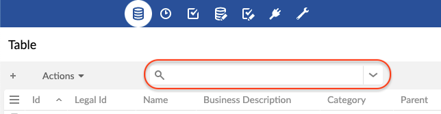
See Quick Search for more information.
A new Advanced Search pane is available at the top of the workspace area, for tabular and hierarchical views. This pane is hidden by default. It can be expanded and collapsed with a new dedicated button, which is located to the right of the Quick Search. The Advanced Search pane replaces the 'Search' pane that was formerly available in the filters pane, offering a more user-friendly and efficient search.
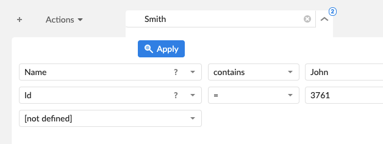
On the hierarchy view, the 'Find in hierarchy' feature has been moved from the filter pane on the right to the bottom bar of the workspace area. This bar is hidden by default. You can expand or collapse the view with a new dedicated button at the bottom left of the workspace area.
When a text search is applied on a tabular view, by default, this view is sorted by score, with the most relevant records displayed first. Sort by relevancy is available for the results of a quick search, potentially in combination with more predicates (from advanced search). You can disable this type of sort and restore the previous sort criteria before the search.
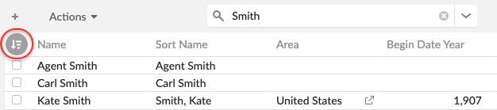
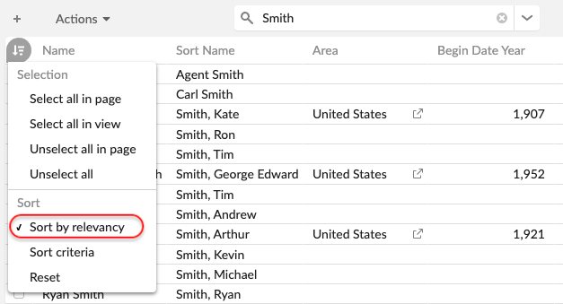
When you sort on a string column with a Name or Text search strategy, the sort now better follows the usual language alphabetical order. For instance, the letter 'é' is after 'e' and before 'f'.
When loading a page in a tabular view takes longer than expected, a 'Cancel' button is displayed.
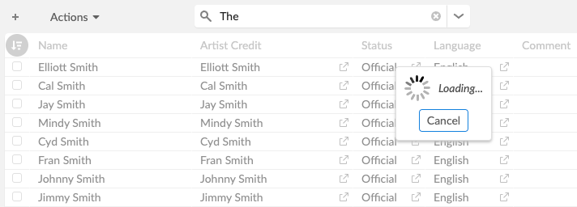
Clicking this button cancels the request and prompts you to define more selective filters or more simple sort criteria.
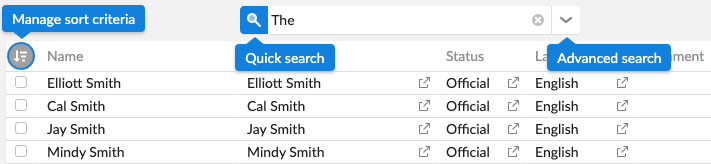
The breadcrumb has been improved to better support many levels, and to facilitate the navigation in these levels.
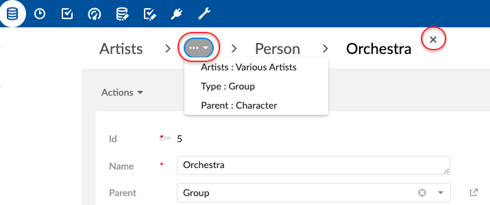
Maximum three elements in a breadcrumb | The number of displayed elements is reduced to three to provide faster access to the breadcrumb items. |
Menu button | All non-displayed items are available in a drop-down menu. |
Close button | A new 'Close' button closes the last item of the breadcrumb (the current page). |
Relationship labels | When the record is opened from a foreign key or an association table, the table label is replaced by the relationship label. |
Display of optional information | The display of a table or relationship label preceding the record label is now optional and can be configured directly on the node in the Data Model Assistant. |
The 'Edit', 'Duplicate', 'Delete', 'Define as favorite' actions are now accessible on the first level of the view menu. The toolbar containing these actions is displayed on mouseover of any view menu item.
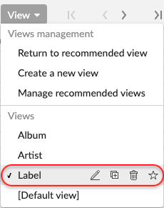
The built-in user service "Edit link record" was available only from the record form. You can now open the link record directly from the hierarchy view. In the hierarchy tree, this service is now available directly on the concerned hierarchy node.
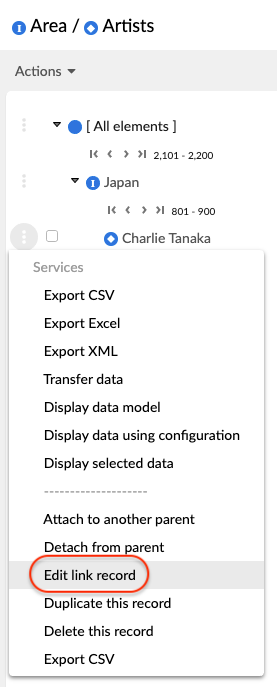
Dataspace tree results are now paginated to handle larger volumes, and a search bar has been added to help you quickly filter dataspaces. The search query is performed on the key and the localized label, and as you finish typing, the search results are refined seamlessly.
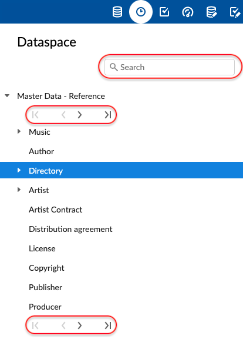
In administration, the default view of the dataspaces table has been changed to a hierarchical view, which better matches the logical representation of dataspaces.
The message box is restored to that of versions prior to 5.9. It displays only messages related to the current page. Every time a new page is displayed or closed, the content of the message box is automatically updated. Hence, old and new messages do not build up in the message box, and the same message is displayed only once.
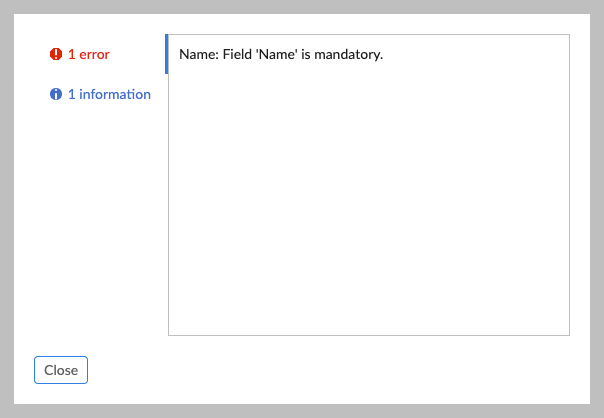
From the Web user interface, you can now create customized forms with a graphical editor. No Java programming is required. This feature is available as an extension in the Data Model Assistant.
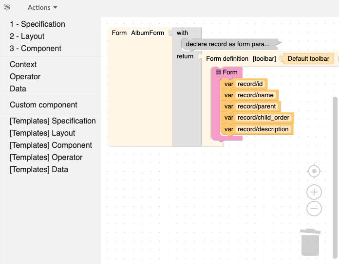
See Custom forms for more information.
To launch any workflow with any data contexts, you can use the new user service. Workflows are henceforth available directly on the toolbar of tables, records, or hierarchies.
To display a workflow on the toolbar, first create and configure a workflow launcher from the "Workflow launchers" section. This section is available in the "Administration/workflow management" area.
This new feature offers several advantages, including improving the user experience by saving the user from shifting attention between the data view and the workflow view. It also supports launching the same workflow from any data context.
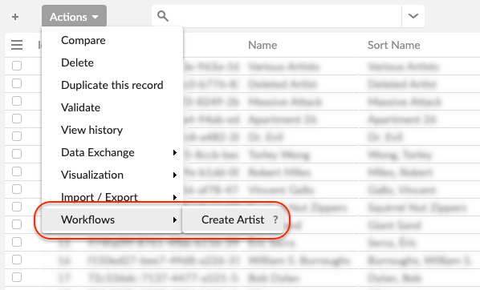
See UI – Workflow launcher for more information.
You can now sort every level of a hierarchy view. In the configuration of the hierarchy view, the previous 'Ordering field' option has been replaced by the new 'Sort strategy' setting. This setting allows choosing between the strategies 'Default', 'Sort by columns', or 'Sort by ordering field'.
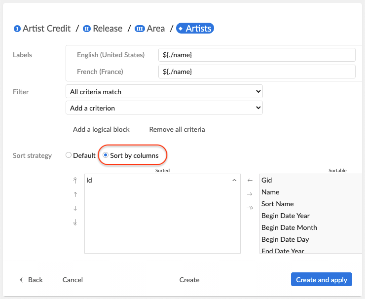
See Viewing data for more information.
In "Administration > [any perspective] > Ergonomics and layout", three new parameters have been added.
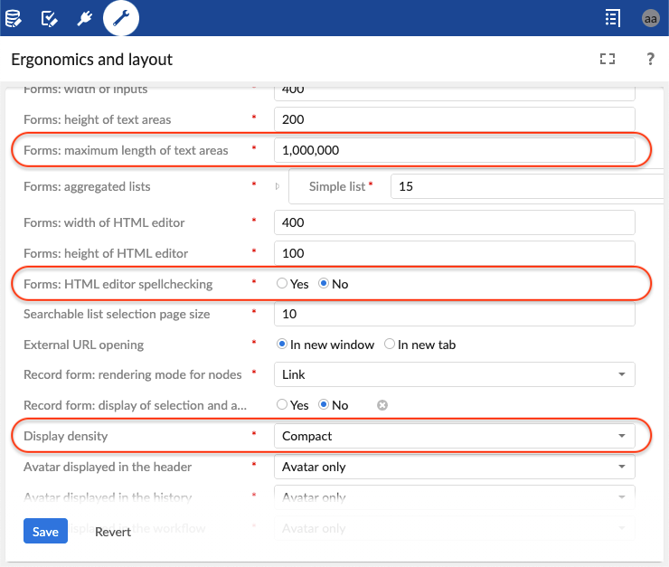
See Ergonomics and layout for more information.
Maximum length of text areas | The maximum number of characters allowed for text area fields in forms. You can disable this parameter by entering a negative number. |
HTML editors spellchecking | Spellchecking is provided by the browser spellchecker. After spellchecking is activated, the browser user interface dictionary is used by default. This setting is customizable if many dictionaries are installed. If HTML input is read-only, spellcheck is disabled. |
Default display density | You can set the default density for all users. The default display density is 'Compact'. |
The Data Model Assistant now contains options to hide toolbars of association tables. On association nodes, the options are located within the setting group "Rendering in forms". This new feature is also available programmatically from the Java class UITable.
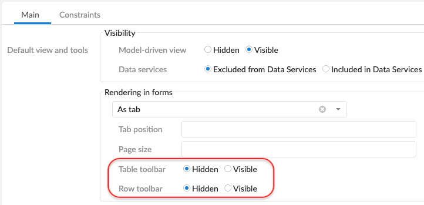
To simulate whether a form node is mandatory, you can now add or remove a 'mandatory' indicator (*) next to the label of the form node. Use the JavaScriptCatalog.ebx_form_setMandatoryIndicator in JavaScript or UIFormWriter.addJS_setNodeMandatoryIndicator in Java.
To modify your profile, you can use the built-in service 'Profile settings'. This built-in service is available with the default directory. It is deactivated when EBX® is configured to use a custom directory. If a custom directory extends the default one, the user service can be reactivated by setting ebx.myProfile.enabled to true in the EBX® main configuration file. The built-in service 'Profile settings' key is ServiceKey.MY_PROFILE.
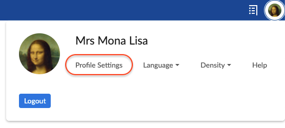
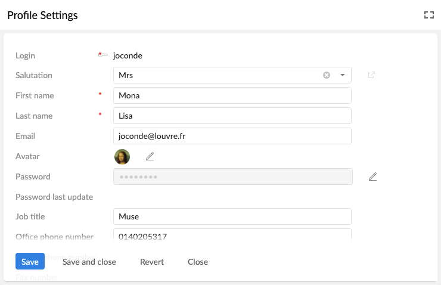
The new package Perspective provides classes for retrieving all relevant information about the preferences and menu for the perspectives.
To get the current perspective from a context, use the new method getCurrentPerspective. This method has been added to the following classes :
UIFormContext. See UIFormContext.getCurrentPerspective
UILabelRendererContext. See UILabelRendererContext.getCurrentPerspective
UserServiceRequest. See UserServiceRequest.getCurrentPerspective
WidgetDisplayContext. See WidgetDisplayContext.getCurrentPerspective
The new method ToolbarButton.setHighlighted has been added to the ToolbarButton API. It allows defining whether the current button should be highlighted by default.
To specify fields that are computed at runtime, you can use the new scripting language. In this release, the computation can depend only on the data of the current record.
Compared to a "value function" written in Java, the advantages include the following:
Scripting is less error-prone, due to tighter integration with EBX®.
Indexing of the computed value allows efficient search and sort on the field.
Does not require advanced programming skills.
Does not require redeploying EBX®.
A rule editor, with syntax highlighting and contextual completion, is available in the Data Model Assistant.
See Function field for more information.
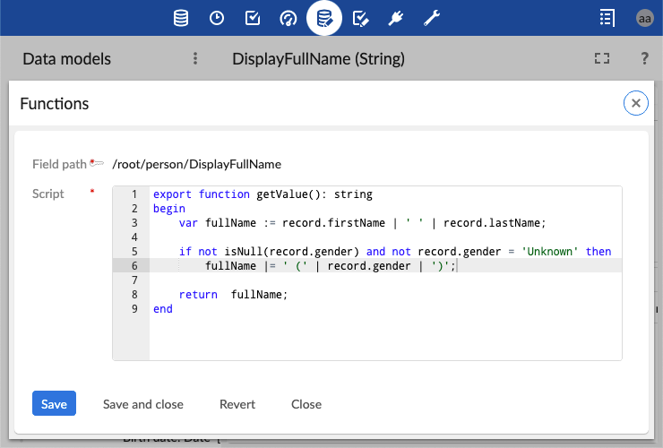
To specify record-level access rules on a given table, use the new scripting language. Any permission rule must return the access ("read-write", "read-only", or "hidden") for the current context: the current record, the current user session (including user roles), and so on.
Compared to "access rules" written in Java, an advantage is that scripting significantly improves performance, especially for large volumes of data, by leveraging the new EBX® SQL engine.
A rule editor, with syntax highlighting and contextual completion, is available as an extension in the Data Model Assistant.
See Record permission for more information.
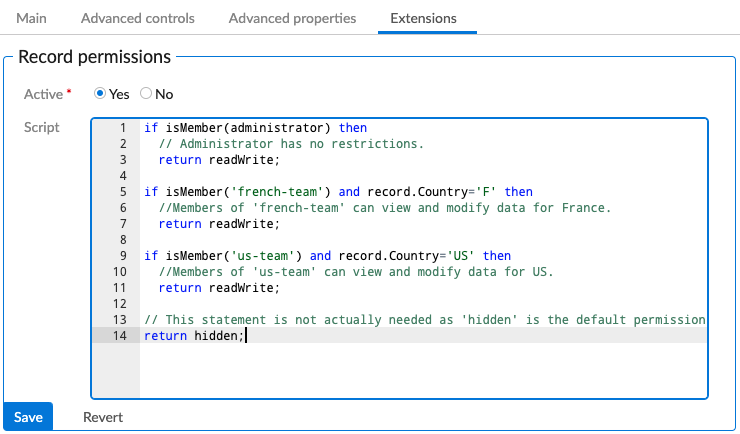
When you edit a field in the Data Model Assistant, you can now define its indexing. This new option is available under the tab 'Extensions', 'Search' section. In particular for string fields, this new option supports defining how the Quick Search is performed.
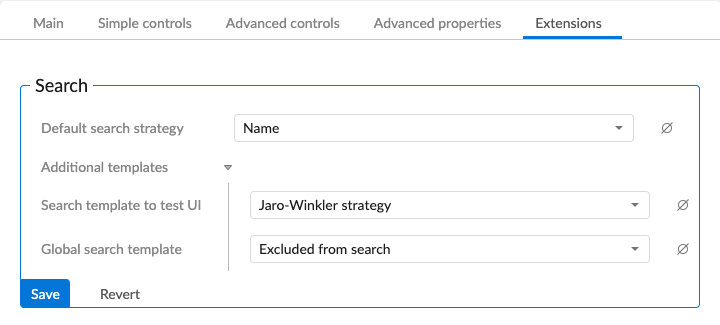
Also, to implement advanced and efficient search strategies, use a new service to define custom indexing. This new service is available in the left navigation pane, under 'Extensions > Search'.
See Search for more information.
You can now define a new kind of field that refers to another field in the target table of a relationship. Use this new feature to simulate a multi-table view by aggregating the fields of a main table with some fields of another table.
See Linked fields for more information.
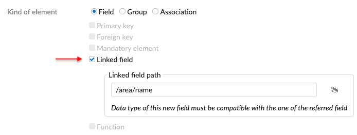
You can now specify that a value must be unique in the scope of a simple list (fields that define maxOccurs > 1)).
See Uniqueness constraint for more information.
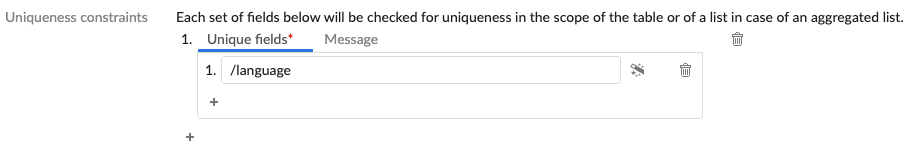
You can now define associations 'by foreign key', based on an existing foreign key field that is multi-valued (defines maxOccurs > 1).
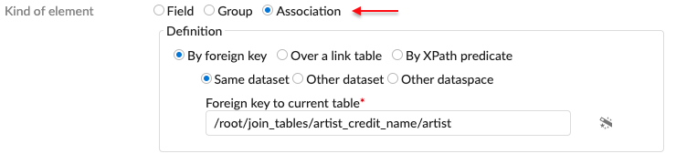
Facet on mandatory field | A new interface to retrieve the cardinality constraint specifying that a field is mandatory ( See |
Retrieving the node associated to a facet | A new method to retrieve the node that is associated with a facet. See |
Facet validation message | A new interface to retrieve the validation message defined by a facet. See |
XPath filter on foreign key | A new method to retrieve the XPath filter defined on a foreign key constraint. See |
Default view properties | A new method to determine if a node is hidden in all views of a table. See |
The workflow modeling has been enhanced with a full graphical editor.
This editor is based on the graphical view already available in the previous version. This diagram has been enriched to support all of the creation, modification, and deletion operations. This editor provides more readability--in particular, in the case of redirects to existing steps.
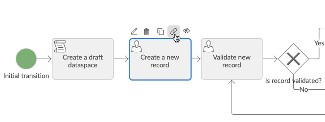
All task actions are available from the diagram.
The [+] button, which inserts a task, is displayed on each selected link.
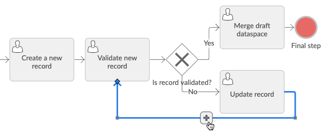
In addition to being more readable, the new editor offers additional features:
Diagram export to a PDF document: this feature is useful for printing a workflow model.
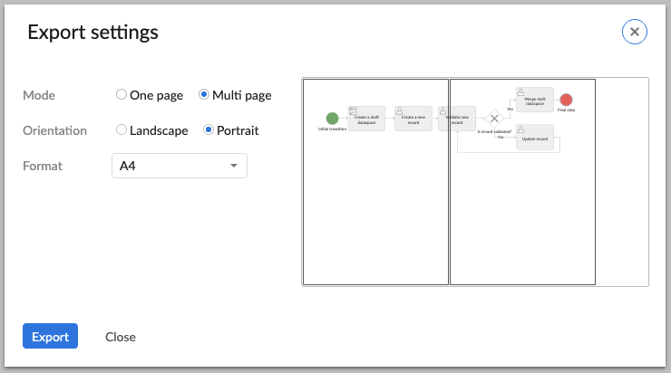
Overview panel: this panel can be collapsed, expanded, and dragged, providing a high level view.
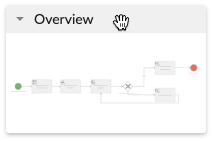
The data context wizard is also provided for custom library items (scripts, user tasks, and conditions).
The declaration of a static sub-workflow has been improved in the user interface: both input and output parameters now have either a select list or data context wizard to help.
Explicit actions to zoom in and out have been added in the toolbar of the diagram.
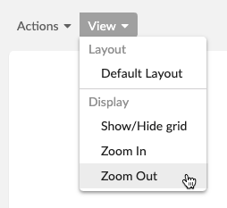
By default, the old hierarchical view is no longer offered. You can reactivate it in read-only mode by using a dedicated property. See Backward compatibility for more information.
For more information about the workflow editor, see Editing the workflow diagram.
The progress strategy is useful for performing several tasks consecutively, without returning to the inbox. This feature is now available for the sub-workflows.
A new concept has been added to implement this feature for sub-workflows: if there are several sub-workflows, you must define which one is the "foreground sub-workflow". Only in this foreground sub-workflow can you exploit the progress strategy.
The user interface now includes a field for static sub-workflow to define the foreground sub-workflow.
The method SubWorkflowsCreationContext.setForegroundSubWorkflow has been added to set which sub-workflow should be considered in the foreground, for dynamic sub-workflow. And the method ProcessLauncher.isForegroundSubworkflow has been added to know if a launcher is associated to a sub-workflow in the foreground.
For more information, see Sub-workflow invocations.
In addition to the progress view, the workflow model diagram is now available in the Data Workflows section (inbox, Monitoring-Work items, Monitoring-Active workflows, and Completed workflows).
The progress view provides a view of the workflow execution history, whereas the diagram offers a more functional view of what the workflow does as a whole.
You can now deactivate the validation report copy while creating a snapshot via built-in script task. An additional property is available in the script task definition.
The publication service has been updated. At the last step, when the selected workflow models have been published, a new tab is available to list the potentially affected workflow launchers.
Workflow input parameter | A new feature to test whether a variable name is defined as an input parameter of the data context. |
Hidden step in progress view | A new method determines if a step is defined as hidden in the progress view. |
See Scripted permission rules section above.
To improve performance, permissions caching has been enhanced, and now also handles the following permission resolutions:
Low-level actions on a table (for example, create, delete, overwrite, and occult).
All kinds of access rule results: AccessRule, AccessRuleForCreate, and scripted record access rules.
Validation reports are now persisted in the EBX® repository. That is, validation reports are no longer kept in memory, but are stored in technical datasets of dedicated dataspaces. Storing validation reports in an EBX® repository addresses memory-related issues when datasets have a large amount of validation messages. Also, validation reports are no longer lost when the application server restarts.
You can now indicate that the implementation of a programmatic constraint has been changed, by associating a version number to the implementation of a JavaBean. This version number is used to indicate that existing persisted validation reports must be updated by revalidating the constraints that have been modified. As a consequence, you must define a version number of each of the constraints defined in a data model to keep existing persisted validation reports consistent when the implementation of these constraints is modified.
See JavaBeanVersion for more information.
You can now specify a validation message threshold at the data model level. This new feature replaces the property ebx.validation.constraints.messages.threshold that is defined in the EBX® main configuration file (ebx.properties).
See Validation message threshold for more information.
You can now validate a record that has not yet been created, and you can validate the updates performed on a record or on dataset nodes that have not yet been committed.
See ValueContextForUpdate.getValidationReport for more information.
To retrieve the facet associated with a validation item, use the new method ValidationReportItem.getFacet. That is, this new method supports retrieving the facet that has added a validation message.
See ValidationReportItem.getFacet for more information.
To retrieve the blocking policy associated with a validation item, use the new method ValidationReportItem.getBlocksCommit.
See ValidationReportItem.getBlocksCommit for more information.
To release underlying resources, use the new method ValidationReportItemIterator.close.
See ValidationReportItemIterator.close for more information.
Requesting a validation report with the refresh policy ValidationSpec.RefreshPolicy.AS_IS returns only the persisted validation report. The validation report is empty if the dataset, the table, or the record has not already been validated.
See ValidationSpec.RefreshPolicy for more information.
To specify the maximum number of validation items to display in the logs, use the new property ebx.validation.report.maxItemDisplayedInLogs, from the EBX® main configuration file (ebx.properties). By default this property is set to 100. See Backward compatibility for more information.
A new interface and built-in query parameter have been added to ease Procedure execution through automatic pre-configuration.
See ProcedureUtility and BuiltinQueryParam.COMMIT_THRESHOLD for more information.
URI builders have been reworked to do the following:
Add new methods for query parameters management.
Enhance modular, generic, and intuitive developments.
Comply with the addition of new REST categories.
Support the new beta feature on dataspace or snapshot operations.
See Beta feature: Dataspace operations for more information.
See URIBuilderForBuiltin and URI builders for more information.
Built-in serializers and deserializers are available to handle table records.
Built-in deserializers | To automatically deserialize a table record, use a DTO's attribute of |
Built-in serializers | To automatically serialize a table record, use a DTO's attribute of A table record serialized through this mechanism gets the same JSON content structure as the ones from the Built-in RESTful services. However, a new compact format has been added to ease interaction for simple use cases. The absence of the The |
See Serialization of a table record for more information.
The built-in RESTful services have been improved on the following topics:
Data views operation | A new operation from the 'data' category is available to look up the published views of a table. See Look up table views operation for more information. |
Data operations | Two new prepare operations with selector values are available to create and initialize a transient record for creation or duplication. Several new properties have been added to fields' metadata, namely: On select operations, the sort features have been improved, allowing the results to be ordered: by relevancy with the new sortByRelevancy parameter, by overriding the default priority of sort groups with the new sortPriority parameter. See Prepare operations, |
Form data operations | A new 'form-data' category is available. It is intended to be used to insert or update data on user form. This category validates the incoming data before performing the requested action and returns a report. See Form data operations for more information. |
Compact format serialization | New categories with a 'compact' suffix are available for data and form data operations. They are very similar to the root ones but they are intended to be used to compact the JSON body content structure to ease interaction for simple use cases. All formats are based on the new REST Toolkit's Built-in serializers. See Operation category and REST Toolkit serialization for more information. |
OpenAPI operations | A new 'open-api' category is available. It is intended to generate OpenAPI documents for table and schema nodes of the REST built-in 'data' category operations. See OpenAPI operations for more information. |
Beta feature: Dataspace or snapshot operations | Several new operations from the 'data' category are available, as beta feature, to manage dataspace or snapshots. See Beta feature: Dataspace operations for more information. |
Token operation | The built-in REST token authentication create operation has been improved: It can now be performed against the HTTP request. See Token authentication operations for more information. |
Common parameters | A new 'ebx-channel' query parameter is introduced to apply visibility configuration, defined in the data model, according to a table, a field, or a search. The content also corresponds to the current view (tree view, tabular, custom, form, and so on). A new 'ebx-indent' query parameter is introduced to indent the response body and be more readable for a human. The 'indent' query parameter has been deprecated. See Session channel, ebx-channel and ebx-indent for more information. |
The LZ4 compression algorithm is now used internally by the EBX® engine. You must deploy the dedicated library. Also, the way you deploy this dedicated library has a global impact on performance. See Data compression library for more information.
To speed up the startup of the web applications server, configure the JAR files scanner.
The upgrade of the Xalan and Xerces packaged libraries introduces new dependencies toward classes provided by the Java runtime environment 9. You can add these classes without resorting to the Java runtime environment 11 LTS by installing the new bundled jar archive called xml-apis-1.4.01.jar. If a Java runtime environment 11 LTS, or above, or a WebLogic 14c application server is used to run the application, then no additional installation steps are required. See XML Catalog API and Installation notes for more information.
New APIs have been added that support executing full-fledged SQL queries, and joins over tables located in different dataspaces and datasets.
The main entry point is the Query interface. For more information on SQL queries, see the respective chapters in the Developer's guide.
Triggers defined at the dataset level have been enhanced to perform operations:
After duplicating a dataset.
Before updating a field outside a table.
After updating a field outside a table.
See InstanceTrigger for more information.
The performance of these features is not yet optimized:
Navigation on paginated views (next/previous page) with sort on foreign key fields having a custom display pattern, if this pattern contains fields outside the primary key of the referenced table.
The following cases do not rely on Lucene indices. This has two consequences: first, performance is not optimized; second, Quick search behaves like a 'contains', rather than a full-text search:
computed fields with non-local dependency;
inherited fields;
all fields in an inherited dataset;
all fields in table history views.
More specific cases not benefiting from index optimization are described in the following section.
Search and sort using the value-labeling feature have a few limitations described in section Value-labeling.
The container node used for grouping orphan nodes appears to be openable, even when the container node is empty. Detecting whether the container node is empty is currently disabled because it is not optimized.
Hierarchy dimension based on dependency link field which is a list or under a list is not allowed.
While building a hierarchy dimension, the same table (or same table path) cannot be used in more than one hierarchy dimension level.
While building a hierarchy dimension, the same table cannot be used both as a target table and a link table.
Selection in hierarchy is not cumulative: changing a user filter during a selection session may lead to unwanted results.
CSV export is not implemented.
Specific parameter: the property 'Remove recursive root leaves' and 'Display non-matching children' is not implemented.
It is not possible to validate a dataset or a table within a Procedure.
Targeting a node which is an enumeration is not fully supported yet. Currently, only the raw value will be available for display and search, instead of the enumeration label. Until this limitation is removed, the workaround is to declare the same enumeration in the target node and in the linked field itself.
In addition to the information provided in this release note, the chapter 6.0 Java API changes provides an exhaustive list of the new Java APIs published since the release of the 5.9 version.
Although EBX® 6 supports addressing vastly larger volumes of data, it does so without requiring additional memory. However, additional disk space is needed to store the Lucene indexes.
Memory requirements | The overall amount of memory can remain the same as for the previous version, but it should be dispatched more evenly between the application server and the operating system. See the performance section. |
Disk space requirements | This new version offloads the indexes from memory to store them in a persistent way. Additional disk space is needed. See the performance section. |
Disk latency requirements | In order to maintain good overall performance, it is particularly important that the disk storing the Lucene indexes has low latency. |
To get a running EBX® 6 from an existing EBX® 5 environment, follow the dedicated migration guide.
The chapter Supported environments has been updated to reflect the necessary upgrades detailed below.
Browser support | The Microsoft Edge versions based on Chromium are now supported. For Mozilla Firefox, the support of ESR 60 has shifted to ESR 68. For Microsoft Edge, the support of 42 has shifted to 44. |
Oracle Database support | Minimum supported version of Oracle is now 12c. |
PostgreSQL support | Minimum supported version of PostgreSQL is now 9.6. |
Microsoft SQL Server support | Minimum supported version of SQL Server is now 2012 SP4. |
Java web application server support | The Java web application server must support the JSON Processing 1.1 (JSR 374) or allow the use of that embedded in the |
WebSphere Application Server support | WebSphere Application Servers which use a Java SDK below version 8.0.4.10 are incompatible and consequently not supported. It is highly recommended to use the latest Java SDK available and compatible with the application server. See Supported application servers for more information. |
The improved implementation of transactions improves concurrency and data isolation.
Concurrency | A running |
Snapshot isolation | While the isolation level was READ_UNCOMMITTED by default, accessed data are now "frozen" on a committed transaction. For more information, see Queries snapshot isolation. |
Adaptations are now immutable | Instances of the Java interface As a consequence, the method Note: In previous versions, the documentation of this method already stated this rule. However, neglecting to do so only had consequences in rare cases. In this version, the immutability is always preserved. |
The new scalable architecture affects the performance of existing custom Java code. Some scenarios, which, in EBX® 5, were favorable, might not work as well on this version, and might require customer action. This is particularly true for middle-sized repositories where all the data could be cached into memory and the garbage collector could work smoothly.
Repeated lookup by primary key | Consider a small table whose data could be fully contained in the cache within our custom EBX® in-memory indexes: it was then cheap to access its records repeatedly by means of random table lookups (although this is generally a discouraged access pattern for databases and information retrieval). In this new version, these accesses must be rewritten, taking advantage of the new SQL features. For example, for Java code performing a 'nested loops' join (iterating on a |
Repeatedly creating similar requests | EBX® now embeds the Apache Calcite framework, in particular for optimizing the submitted instances of |
Programmatic access rules | Programmatic access rules concern the implementations of the Java interface Where possible, replace these programmatic access rules with the new scripted record permission rules. |
Programmatic labels | Programmatic labels concern the implementations of the Java interfaces |
Programmatic filters | Programmatic filters concern the implementations of the Java interface |
Constraints with unknown dependencies | Avoid constraints with unknown dependencies on large datasets, because they are checked on each validation request. See Validation performance for more information. |
Some features are no longer necessary in the new architecture.
Dataspace loading strategy | Formerly, you could define a custom loading strategy for a dataspace, namely: a 'forced loading' strategy for loading the tables and indexes as early as possible in the background at startup; and a 'forced loading and prevalidation' strategy for also pre-computing the validation reports. This new version suppresses the need to load the entire table and compute its indexes when accessing it for the first time. It also offers persistent validation reports. Consequently, all dataspaces are loaded on-demand. |
Indexing | Formerly, you could define indexes on tables, aiming at speeding up requests. This new version makes obsolete the in-memory indexes previously used, as well as the need to define a custom indexing. All fields are indexed persistently. |
License keys | EBX® 6.0 and its addons no longer require license keys. You can remove the |
The new architecture for persistence and the new query engine has made relational mode redundant and cumbersome to support. It is no longer supported. The primary justifications of relational mode were:
Performance on large volumes: this is now provided by a more efficient persistence format, and by the Lucene search library.
Using SQL from inside EBX®: this is now provided through the Query API.
Offering data connectivity with third-party systems. We propose the following to replace access to a relational table: for read-only access, you can activate the replication feature in the data model. For read-write access, which was allowed in restricted conditions, you can use other integration features (such as Java API, data service, and Data Exchange).
When you upgrade to version 6, the data existing in relational tables is automatically transferred into newly-created semantic tables, and then the relational tables are deleted from the database.
This conversion also means:
Limitations due to the relational model no longer apply. For example, you can create snapshots and child dataspaces.
The table can now be replicated.
Previous structural constraints are no longer structural if the data model enables neither history nor replication.
Blocking foreign key constraints are no longer blocking.
Due to the overhaul of the indexing and querying engine, some XPath functions are no longer supported and the sort is impacted.
Numeric fields | Invoking the XPath functions |
matches | Previously, functions of the type |
Sorting on text | It is not possible to sort according to a text field. This concerns When sort is done on a field of type |
The Java interface RequestResult has two changes.
Method | The method |
Closing request results | In previous versions, the documentation of Also note that the method has been slightly modified, and creating the request result ( |
XML audit trail becomes deprecated | The XML audit trail functionality becomes deprecated, and will be suppressed in an upcoming version; it is now disabled by default. The verbose XML format is a hindrance when used with the large volumes which this version addresses: it requires large disk space, and negatively impacts the performance of bulk updates. |
HTTP Security Headers | Using a web server in front of EBX® is recommended to handle HTTP security headers. Therefore, by default, EBX® no longer positions any HTTP security header: the property |
Incremental validation behavior | Incremental validation is no longer performed while executing a procedure and when performing updates in the user interface. That is, it is now required to explicitly revalidate a dataset or a table to validate the updates that have been performed since the last validation. For this reason, the method Because validation reports are now persisted in the EBX® repository, the property |
Validation report API | It is now required to close the |
Validation message threshold | The property The validation message threshold limits the number of validation messages allowed per constraint. Therefore, the method |
Data validation | As a consequence of the bug fix CP-19407, the number of validation items displayed in the logs is now limited by default to 100. For more information, see Validation report logs. |
Improved permission checks when executing queries | When a As a consequence, using the permissions only to hide in the UI non-sensitive information is highly discouraged, especially if this information is likely to be used for filtering, joining, or sorting in a request. See Using permission for hiding information in the UI for more details. |
Legacy user service API is now deprecated | The legacy user service API ( |
JavaScript API | The method ebx_getContainerWindow threw an error when EBX® was embedded in a frame on a different domain. Now, it returns the root EBX® frame. |
Java interface | The Java interface
|
Workflow - Permissions evaluation for workflow launching has been improved | Formerly, permissions for launching a workflow were evaluated when the workflow was launched by the user interface, in Data workflows section, and by data services. Permissions were not evaluated when launching by web component and API. Now, permissions are checked for the following cases:
|
Workflow - Hierarchical view of a workflow model | By default, the hierarchical view is now hidden. However, you can reactivate it in read-only mode by setting the property If the hierarchical view is enabled, then it is available in the workflow diagram, from the View menu (Plan View > hierarchy). |
Workflow - User task with multiple work items | By default, the service for creating a user task with multiple work items is now hidden. However, you can reactivate it by setting the property |
The display mode 'link' is no longer supported for group nodes. | For compatibility reasons, groups that were configured as 'link' are now considered 'collapsed'. |
Data services unlimited selection | The select operations no longer accept an unlimited page size. The pagination mechanism is always enabled, and the maximum page size corresponds to the value of ebx.dataservices.pagination.maxSize.default property. You can update this property value by modifying the See REST built-in select operation and SOAP select request on table for more information. |
Foreign key label and sortable search strategy | The custom display for presenting a foreign key must now be sortable: thus, the fields that are part of the custom display must have only sortable search strategies. This also means that previous models that define foreign key display using non sortable fields such as |
REST built-in select operation with body | To invoke a select operation from HTTP POST with a body, you must use See Select operation for more information. |
REST built-in Exception handling | The key See Exception handling for more information. |
REST Toolkit URI default JSON serialization | The previous URI default JSON serialization suffered from asymmetrical representation. URI are no longer serialized as JSON objects but as
|
REST Toolkit URI builders for built-in | The URI builders API for built-in have been reworked, leading to multiple methods deletion. The builders' API are more in line with the Java See |
Default directory | The "Job Title" field is no longer automatically formatted to the proper case. |
The EBX® Support can now be reached from the https://support.tibco.com website (an account is mandatory in order to access, follow the 'Register' process). Visit the About Support section of this page for more details.
CP-17081 Snapshot and its parent have different content when recreating a dataset.
In some cases, a created snapshot might be empty. This happens if the following steps are executed:
- first procedure: create a dataset and a row in the dataset
- second procedure: delete the dataset, create a dataset with the same name and schema, and call getTable(...)
CP-17707 A VALUE_FUNCTION_ACCESSOR exception occurs when searching with @default search template.
CP-18346 QuickSearch API does not highlight decimal field.
CP-18378NullPointerException when paginating after sort by FK (and referenced record does not exist).
On tabular view, when sorting by a FK column, if the FK record does not exist, the sort "does nothing".
When moving to next page, we get a NullPointerException.
CP-18402 Filter 'osd:label' is ignored on fields of type 'Locale'.
CP-18903 An error occurs when applying quick search on some tables of under the 'Administration' area.
CP-20051 When duplicating a dataset, the newly input label is not saved.
When duplicating a dataset, the input label is not saved.
Then, the duplicated dataset can display either the technical name or the label of the origin dataset.
CP-20133NullPointerException when importing an archive file.
CP-20398 Comparing records on the 'History' table causes a blank page.
When users compare 2 records on the 'History' table in a dataset, a blank page is displayed.
CP-20772 [Relation Matching] ClusterProducer returns no relation data causing wrong decision tree results.
CP-20783 Quick search does not operate on the label of a 'Boolean' field.
When users input a value for a 'Boolean' field on a table, then apply quick search, an incorrect result is returned.
CP-20813 An error occurs when searching a long piece of text on the Quick search bar.
A TooManyClauses error may occur, for an input with a large number of words (tokens) and/or a table with many columns.
CP-20851 Modification of facet name should impact the persisted meta model
For a mapped field, when the name of a facet is changed (for example, from xs:length to xs:maxLength), the description of the facet is not updated in the FCT database table. As a consequence, all following data model compilations detect a change and uselessly issue a DDL.
CP-20882 Inter-database migration fails if the source is SQL Server
If the source is SQL Server, the inter-database migration fails while migrating sequences.
CP-20894 NullPointerException when importing an archive, if the module or schema is unavailable.
CP-20923 Duplicate key exception when importing archive.
CP-20930 NullPointerException when invoking TableViewFactory.findCustomViewFromPublicationName.
CP-21058 In case of a cycle in field inheritance, the result page cannot be displayed.
When users create an inheritance cycle on an inherited field of a record, this causes the whole view page to be in error (not allowing to correct the cycle).
The record should be displayed, with an error message in place of the value of the inherited field.
CP-21075 NullPointerException when importing archive in D3.
CP-21106 The number of historized tables with a similar name in a repository is limited to 256.
CP-21120 An exception is thrown when a foreign key defines a display pattern that includes a non-sortable node.
CP-21187 LxtCompositeSearchStrategy is missing a method to retrieve all strategies assigned to a node (with duplicates).
In the case a node has been assigned duplicate strategies in different search templates, TNode.getSearchStrategies().getSearchTemplateKeys() does not contain all the templates where the duplicate strategies have been set.
CP-21269 Fields under a list are not searchable.
CP-21273 Index rebuild ends with InvalidProtocolBufferException.
An InvalidProtocolBufferException is thrown during index rebuild (possibly also while performing a comparison) if the table includes a ValueFunction or any field access that requires a lookup on another table.
CP-21279 Starting on v6 fails after an inter-database migration.
Startup fails with a "This repository has last been run on an older version" error after an inter-database migration.
CP-21292 Cannot migrate more than 2559745 records from a relational table to EBX®6.
CP-21293 Quick search does not work on linked fields.
CP-21375 VlnValueStates in dataset headers cannot be migrated.
Migrating a dataset with a VlnValueState as the value for creator/last user causes a ClassCastException
CP-21389 Inconsistent default values in workflow administration.
CP-21421 Improve logging and exception management in serialization layers
CP-21440 Performance issue with 'Mass delete' on a very large selection.
The 'Mass delete' process takes very long if millions of records are selected.
CP-21478 ClassCastException while replicating table with a foreign key to a table with composite primary key.
CP-21482 Migration to v6 forces a full refresh of the replica tables.
CP-21520 Avoid SORT/GROUP BY in query plan when clustering without relationship
CP-21530 Wrong limit value when clustering
When using RelBuilder#limit, Calcite automatically increases the limit by one. If Integer.MAX_VALUE is used as the limit value, Calcite computes Integer.MAX_VALUE+1 which overflows to Integer.MIN_VALUE.
CP-21531 Improve management of large clusters
Some datasets may contain records with a huge number of duplicates. This leads to a huge cluster of similar records, then to a lot of record pairs to be compared by the decision tree. Most of the time is then spent applying the decision tree on record pairs.
* In this case, the top-scored tuples in the cluster are the duplicates, and have the same score as the center. To fix this, deactivating the computation of all record pairs for these records would greatly reduce the number of record pairs sent to the decision tree, but still generate enough comparisons to generate a group with all these duplicates.
* The time to iterate the tuples in a cluster is longer than usual, it delays the exclusion of records. To fix this, the exclusion can be done before this iteration.
Note: also added a log to identify when a huge cluster is encountered. It still slows down the process a bit, and there is probably some action to handle those records directly in the data, outside of the matching process.
CP-21576 Performance issue when checking whether a dataset has severe errors.
CP-21596 Wrong serialization descriptor for non-stored field with transitive tableRef.
If a field defines both:
* a valueFunction/computationRule (i.e. is not a value-stored field)
* a transitive tableRef
a ClassCastException occurs during serialization.
CP-21655 Increase the limit when fetching similar records in the matching process.
When matching a single record, the number of candidates was limited to 100. This limit should be increased to 2000.
CP-1118 [35313] Schema compilation on 'Refresh all updated schemas' does not report errors in the UI.
If a schema compilation ends in error on action 'Refresh all updated schemas', the error is not reported in the UI. Only an informative message is displayed, letting the user think that all went fine.
CP-20958 A JavaScript error prevents from publishing the data model when an extension has messages.
CP-20989 A cryptic error message is shown when publishing a data model which contains a search strategy with an unsupported language key.
The displayed error contains an HTML element.
CP-21119 The list of the impacted datasets is incorrect after changing the PK of one of the tables in the datamodel.
CP-21148 An unfriendly error message in the 'Custom search strategies' creation form.
On the 'Custom search strategies' creation form, when users do not define the value for the 'Name' field which is set as a mandatory field, and save record, an unfriendly error message gets displayed on 'Built-in strategy' field.
CP-21255 SqlChecker error with data models if they have circular dependencies, including one data model in error
CP-21316 Validating the 'Strategy' association table should throw an error if a strategy is associated with a linked field.
Since a linked field is a virtual node and uses the strategy associated with the target node, it should not be possible to associate a search strategy with it.
CP-21327 Display a wait page during the creation of the data model.
CP-20629 The documentation for RESTEncodingHelper API is not clear.
CP-20911 NPE occurs when a REST built-in service selects a history table with a foreign key field to a non-historized table.
A NullPointerException occurs when the REST built-in service is used to select the content of a history table containing a foreign key field to a non-historized table.
CP-21044 The query parameter 'ebx-indent' has no effect on REST built-in operations.
When the 'ebx-indent' query parameter is set to false, the JSON content is always indented. All the built-in REST operations are concerned.
CP-21103 REST URL in operation response must better manage 'disableRedirectionToLastBroadcast' parameter.
When the request is applied on D3 dataspace.
1. If 'disableRedirectionToLastBroadcast' parameter is used in request, the URL in JSON response must propagate it.
2. If D3 redirection to a snapshot is activated, the URL in JSON response must keep the original dataspace parameter.
CP-21324 Correct level and location of the built-in logs for REST data services.
REST dataservices builtin logs are not in same level as 5.9.x WARN in INFO and INFO in DEBUG level. Those logs are present in restServices instead of dataServices category.
CP-21510 Error while fetching history with built-in REST service with a tableRef to a different dataset/dataspace.
The error "Specified context must be in the same data model as the field node holding this foreign key constraint" occurs while querying history, with a REST select operation for a table that contains a foreign key a to table belonging to a distinct dataset/dataspace..
CP-20752 Slow response for validation search, on a table with numerous errors.
CP-20910 IllegalArgumentException when modifying a record after applying a validation search to the table.
CP-21035 Parameter names not supported by a search strategy do not raise an error in the validation report.
When using a parameter name not supported by a search strategy, the UI rejects the parameter; but when compiling the model, there is no error.
CP-21067 The number of validation messages on the navigation pane is inconsistent.
When users access tables in the dataset, the number of validation messages on the navigation pane changes continuously.
CP-21068 The validation reports are not duplicated when creating a new child dataset.
When users create a child dataset from its parent, the validation reports are not displayed on that child.
CP-21227 IllegalStateException occurs after modifying the primary key of a table referenced by other tables.
CP-21240 CalciteContextException: Column '...' not found in table '...' during a validation.
CP-2663 [25608] Performance issue on hierarchy when users select all records in view, based on simple join/ ternary simple join model.
On a join table with 50.000 records, it takes a long time to display a hierarchy view based on simple join/ ternary simple join model, if users select all records in the view.
CP-18249 Errors occur when setting a filter on the 'Locale/URI' field on a custom tabular view.
When users set a filter {matches/matches (case sensitive)/contains whole word/contains whole word (case sensitive)} on the 'Local/URI' field of a custom tabular view then apply it, an error occurs on the table.
When users set other filter criteria on the 'Local/URI' field of a custom tabular view then apply it, no records are returned.
CP-19358 An incorrect result is returned when searching with the 'matches' operator.
When users add a criterion using the 'matches' operator, and pattern
[a-z]*[\d]*
or
[a-z]*[\D]*
the system returns an incorrect result.
CP-20414 Differing results are returned when applying a filter on a hierarchy view and a tabular view.
When users apply a quick search on a hierarchy view and on a tabular view (same data, same table) with the same criteria, the results are not the same.
CP-20706 Exporting data from an association with custom view should not export all fields from association table
Considering an association link (definition: By foreign key) with a custom view: while exporting data from the associated table, all table columns are getting exported with the default column position. Usually, the export contains only the columns of the current view.
CP-20821 Performance issue when filtering on multi-valued field.
When users apply an advanced search on a field under a group re-using complex type, the search takes a long time.
CP-3851 [22500] The loading page notification persists when selecting all records in hierarchy view of a large table.
CP-17239 The loading screen persists when applying a 'Search' filter, then applying 'Find in hierarchy'.
CP-17452 A blank workspace is shown when selecting records on a hierarchy view that has large data.
When users select records by using 'All' from 'Select and display' > 'Select records', the loading screen persists for quite a while, then a blank workspace displays.
CP-18339 IllegalArgumentException when searching on ragged hierarchy.
CP-18570 IllegalArgumentException while displaying hierarchy with composite links.
CP-19145 A fatal error occurs when clicking 'Select all children' in the hierarchy view.
When users add a new primary key to the model, then click 'Select all children' in the hierarchy view, a fatal error occurs.
CP-19164 An incorrect result is displayed when applying a filtered hierarchy view on a target table which is also a join table.
CP-19975 When deleting a record and applying the 'Select records' service, the records in the hierarchy view disappear.
If, after deleting a record in the hierarchy view, users click on the 'All' or 'None' selection, the records on the table disappear.
This bug also occurs when deleting a record and applying a value on the 'Find in hierarchy'.
CP-20095 [All browsers] The filter icon is not displayed on the filtered node after applying an advanced search on the filtered hierarchy view.
When users apply an advanced search on the filtered hierarchy view, the filter icon is not displayed in the filtered node, and a blank search pane is displayed.
CP-20225 The number of selected records is not updated when a record is deleted on the hierarchy view.
CP-20410 A blank workspace is displayed when applying the text search, then selecting all records on a hierarchy view that has large data.
CP-20418 An error message is displayed when creating a hierarchy view that contains an HTML field on its label.
CP-20677 An incorrect result is displayed when applying quick search on a 'Date' field in hierarchy view of a child dataset.
CP-20678 Hierarchy search in error on a recursive link with a contextual date field link.
When users create and apply a hierarchy view, then expand an unset node, an error message is displayed.
CP-20679 A fatal error occurs when choosing a filtered record, then selecting all records in the hierarchy view of a child dataset.
In the hierarchy view of a child dataset, when users apply quick search, tick on the filtered record, then select all records, a fatal error occurs.
CP-20681 A fatal error occurs when selecting 'None' on hierarchy view of child dataset.
In the hierarchy view of a child dataset, when users apply quick search, then choose all records, and finally choose 'None' selection, a fatal error occurs.
CP-20693 A white page is displayed when selecting all records in the hierarchy view of a child dataset.
CP-20700 Hierarchy: The elements returned by 'Find' are not filtered by the search.
CP-20839 An error occurs when applying a hierarchy view on the "Activations" table.
On the "Activations" table of the "Workflow launchers" under the "Administrations", an error occurs when applying a hierarchy view with dimension "Tables/Activations".
CP-21022 An error occurs when applying search/ quick search on a hierarchy view based on a Boolean field.
CP-21132 No children found if the next target level is recursive.
CP-21220 An error message is displayed when creating a hierarchy view on a table whose label involves a field with certain search strategies.
Error when users create a hierarchy view on a table, if it has a foreign key to a table whose label refers to a field with search strategy= Text/Excluded from search.
CP-21233 Hierarchy Pagination on source fails on a binary-link dependency ordered by link.
Hierarchy Pagination on source fails when searching on a binary-link dependency ordered by link.
- 'next page' does nothing
- 'previous page' (after a last page) fails.
CP-21246 An exception occurs when creating a record under an orphan parent in the hierarchy view.
An exception occurs when creating a record under an orphan parent in the hierarchy view
CP-21290 'Find' fails on hierarchy with ternary recursive dependency.
'Find' on hierarchy with a dimension such as 'active -> employee -> employee' fails with a ConversionException
CP-21381 A member of a recursive hierarchy tree cannot also be the child of parent level.
For a dimension as s -> t -> t, a member t of the recursive tree cannot be child of a s member, except if it is a root of the t tree.
CP-21395 Hierarchy error when its dimension is based on a chain of composite foreign key dependencies.
CP-21508 Hierarchy on mapped tables displays the wrong results.
In dataset Administration -> History and Logs, define a hierarchy on the table 'Repository connection log' with the dimension Mode -> Repository.
If we open any Mode member, all the records are displayed.
CP-2239 [31108] The data context variable standing for output parameter of validation service is not displayed.
After defining a data context variable for 'Output parameters' of the service '[built-in] Validate a dataspace, a snapshot or a dataset': this variable is not displayed.
CP-17206 The PDF export pop-up of 'Workflow diagram' is poorly displayed.
In 'Workflow diagram', the Export settings (PDF) form moves up when users open the 'Format' drop-down list, and the pane that contains the diagram comes without a right border.
CP-19440 When opening a sub-workflow, its parent workflow item is not displayed in breadcrumb.
CP-19752 When using the 'Duplicate' service in a workflow user task, primary key fields that are also foreign keys are not editable.
CP-19882 The workflow model does not comply with the modeling default values.
When users set the default values of the 'Activate quick launch' and 'Automatically open the first step' as 'Yes', then create a workflow model: the default values of these fields in this model are 'No'.
CP-20221 Improve speed performance of workflow write actions.
CP-20747 'Find in hierarchy' bar should not be displayed on the workflow model.
When users access the hierarchy view on the workflow model, then apply the 'Find in hierarchy', no matching record is highlighted and the 'Find in hierarchy' pane is closed.
CP-20767 Unwanted redirection to the inbox, when closing a snapshot through the 'Publication history' service.
CP-21143 A wrong message is displayed when running the 'Clean interaction table' service on the 'Interaction' table of the 'Interaction' dataset under Administration.
CP-21218 The priority is not updated on 'Data workflow' when users set the default priority on 'Administration'.
CP-21338 Default value for workflow activation should be 'true '.
The default value should be 'true', since workflow is most commonly used.
CP-21390 Spelling error in a message for workflows
The following French message for workflows contains some spelling errors :
Impossible d'ouvrir le bon de travail à cause d'une erreur inatendue. Veuillez contater votre administrateur.
It should be instead :
Impossible d'ouvrir le bon de travail à cause d'une erreur inattendue. Veuillez contacter votre administrateur.
CP-19944NullPointerException when importing an archive to a data space.
CP-19987 The first page of the dataspace pagination is displayed after clicking on the breadcrumb of a dataspace.
When users click on the breadcrumb of a dataspace, they are re-directed to the first page of the pagination.
CP-20788 The "Workflow launcher" service behaves abnormally on the History table.
When users click on the "Workflow launcher" service under the "Actions" menu on the History table, the History table is closed and the data table is displayed.
CP-20796 The "Sort by relevancy" service should not be offered on the History table.
CP-21017 Error when several threads concurrently access the history of a table.
CP-21433 Resetting all schemas can deadlock with D3 event notifications.
CP-21380 Clarify the installation notes for LZ4.
The application servers' installation note are not clear enough for customers wishing to install the LZ4 library natively.
CP-21005 ClassCastException when querying OResource fields: String cannot be cast to OResource.
CP-21169 SQL query with AVG function fails with CannotPlanException.
CP-21178 Inconsistent entries for default value of Query Cache entryExpirationInMinutes.
CP-21277 Calcite metadata rowCount returns incorrect value for LuceneToEnumerableCount.
CP-21337 No results returned for quick search on a 'Resource' field.
CP-21340 Sorting by a 'Resource' field causes exception when paginating.
CP-21367 Quick search does not operate on the label of a 'Locale' field.
Quick search does not operate on the label of a 'Locale' field.
CP-21529 LEFT/RIGHT JOIN with OFFSET returns wrong results.
The problem can be reproduced with e.g.
SELECT n.n_nationkey, n.n_name, r.r_name
FROM nation n LEFT JOIN region r
ON n.n_regionkey.r_regionkey = r.r_regionkey
ORDER BY n.n_name OFFSET 1
This query returns an incorrect result, since the OFFSET is applied more than once, probably due to a bug in Calcite's SortJoinTransposeRule (see CALCITE-4617)
CP-21676 Wrong translation for osd:label filter on locale field.
CP-21708 Repeated access to Lucene indexes slows down the diff between the semantic table and the replica.
If a full diff with the replica has to be computed (for example: when activating replication), the repeated access to the persistent Lucene indexes takes very long, for tables with millions of records.
CP-19778 Exception when requesting REST with a custom servlet path.
If a custom servlet path configuration is set: when sending a REST request generated from the UIResourceLocator#getURLForRest API, a ServletException occurs on the server side.
On the browser, the response is 200 OK, but it contains the HTML error content, not the expected JSON content.
CP-21034 The UI should not depend on the activation of the built-in REST service, defined from the global permissions dataset.
CP-21188 RequestUriFilter does not properly handle base URI definition according to built-in data services lineage and modules public path prefix property.
When the _ebx.module.publicPath.prefix_ property and the built-in data services lineage are defined, their URI path value are concatenated resulting in wrong URI builds.
If no built-in data services lineage and no modules public path prefix are defined, then default values must be applied.
* server URI path: /
* built-in data services URI path: /ebx-dataservices
* base URI path: the one from the HTTP request
* request URI path: the one from the HTTP request
If no built-in data services lineage is defined but there is a modules public path prefix, then it must be considered:
* server URI path: modules public path prefix
* built-in data services URI path: modules public path prefix + /ebx-dataservices
* base URI path: modules public path prefix + partial base URI path which begin with the servlet name segment
* request URI path: modules public path prefix + partial request URI path which begin with the servlet name segment
If there is a built-in data services lineage, then it must be considered:
* server URI path: built-in data services lineage URI path minus the servlet name segment
* built-in data services URI path: built-in data services lineage URI path
* base URI path: server URI path + partial base URI path which begin with the servlet name segment
* request URI path: server URI path + partial request URI path which begin with the servlet name segment
CP-825 [37252] When setting the 'Node category' field to 'Hidden' for a table, under the 'Action' menu of an associated data set, 'Categories' is not shown.
CP-18601 The horizontal scroll bar is not displayed, in a form opened from a work item.
CP-19041 The 'collapsed' state in custom perspective does not remain.
After clicking on the 'Collapse' button of a custom perspective, then opening the 'Select perspective' menu, the navigation pane of custom perspective is changed to 'Expand' state.
CP-19134 An incorrect behavior occurs when a non-admin user changes the owner on the information page of a dataspace.
When a non-admin user changes the owner on the information page of a dataspace and saves it, no error message is displayed. When clicking on the 'Close' button, the error message is displayed with duplicated content.
CP-19789 [All browsers] The service icons overlap the label view when accessing as a non-admin user.
A view created by an admin user is shared with all profiles. When accessing this view as a non-admin user, all service icons overlap the label view.
CP-19829 The default value of the 'Progress strategy' field on the creation form is not synchronized after updating the configuration in the 'Modeling default values' table.
When '[not defined]'/'Display the work items table'/'Automatically open the next step' is set to be the default value for the following fields:
* Progress strategy for a user task
* Progress strategy for a subworkflow invocation
* Progress strategy for a script task
* Progress strategy for a condition
Then, on the creation form of a user task/sub-workflow invocation/script task/condition, the value of the 'Progress strategy' field is [not defined].
CP-19868 The focus on custom perspective item does not take the full width.
CP-19870 In custom perspective, the selected item loses its selected style after a few milliseconds.
CP-19968 The dataspace tree does not expand to the search result.
When users search on a dataspace tree, if the search result is a child dataset of level 2, the dataspace tree does not expand to that result.
CP-20007 [All browsers] A JavaScript error occurs after accessing a snapshot.
CP-20232 Exception thrown on advanced search for a 'Resource' field.
If users create a criterion for the resource field on the advanced search pane, then apply it, an error occurs.
CP-20264 [Edge44] Some paging buttons are not displayed and highlighted when accessing a table.
On the Edge browser, when users access a table that has over 10 records, some paging buttons: 'next>|', 'last>|' are not displayed and highlighted. When users hover over it, they are displayed and highlighted.
CP-20316 An error message is shown when applying the quick search on the 'Active workflows' table.
When users apply the advanced search on the 'Priority' field, an error message is shown.
CP-20394 [All browsers] The View menu is not fully displayed when creating a view with a long name in the 'Administration' area.
When creating a view with a long name in the 'Administration' area, the view menu is not fully displayed.
The issue also happens on the 'Data workflows' area.
CP-20427 An item is missing on the breadcrumb of a dataspace.
When opening a permission record or a history record in a data space, the breadcrumb is not displayed fully.
CP-20516 [Chrome/Edge]The label of the tables under the 'Extensions' is blurred when zooming out the page 80%.
When zooming out the page 80% and accessing any table under 'Extensions', the first letter of the label is blurred.
CP-20646 Sub tabbed pane should fill parent width.
A tabbed pane under another tabbed pane has a special display. It should have the same width than the parent tab.
CP-20785 Some matching records are not highlighted when repeatedly clicking on the 'Next' button in the 'Find in hierarchy' pane.
CP-20811 The matching records are not highlighted when executing the 'Find in hierarchy' on the integer field.
CP-20859 In the 'Record permission script' extension, an alert is displayed when user clicks the 'Revert' button when script has been modified.
A warning displays that "modifications may be lost".
CP-20868 When navigating to a new dataspace, the previously selected dataset node should remain selected.
When user changes the dataspace, the UI tries to keep the same dataset selected, if it exists.
The same process should apply to the node selected in the dataset.
CP-20899 Custom strategy label overwrites reserved name.
A user imports an XML file in the strategy table of the search extension. If this file contains a record for which the name of the strategy is a reserved name, the record will be displayed in error in the table.
But in the extension search, the name of the associated built-in strategy will be overwritten by the label of the custom strategy in error.
CP-20904 The authorization header is not correctly escaped
The authorization header contains unexpected characters, which may prevent the user from logging.
CP-20931 Extensions are displayed in RW policy when they should be displayed in RO.
When setting the value access policy of a model in "Read-Only", the extensions under the 'Extension' tab are still displayed as though they could be overwritten. It is not the case - the user cannot save the modifications brought to the extension- but the display should not allow any modifications.
When accessing extensions through the navigation pane, the same issue occurs. If we are not in the case of a table, we have still the option to modify and try to save the extension.
CP-20948 The documentation pane of the default strategy is truncated in the case of a foreign key.
In the case of a foreign key, the default strategy documentation pane is not fully displayed.
The only solution is to increase the height of the extension frame to fit the whole description.
CP-20951 [All browsers] A blank extension content is displayed when clicking on the 'Save custom layout' button in the 'Set custom form' area under the 'Extensions' tab of a table.
CP-20952 The record is still highlighted when modifying/removing a search on the hierarchy view.
If users apply a search combined with finding in hierarchy: the record remains highlighted when users modify or remove that search.
CP-21031 The 'fullscreen' state of the Data Model Extension should be persisted.
CP-21033 When duplicating a dataset, and inputting an existing name for it, the error message is not user-friendly.
CP-21045 ConcurrentModificationException thrown when adding a criterion.
A ConcurrentModificationException may be thrown when adding a criterion in the advanced filters pane.
CP-21046 When closing a user service form, the user is not redirected to the right view.
When closing a user service form with the default 'Close' button, the user is not redirected to the right view.
This occurs when the record was opened from a work item that selects a custom hierarchical table view.
In that case, the user is redirected to the default view instead of the custom one.
CP-21064 In custom forms, the 'Save', 'Save and close' and 'Revert' button should be hidden.
When displaying a record with a custom layout: if this record is inherited or in read-only mode, then these buttons should not be displayed.
CP-21070 Error on a hierarchy view based on osd:select dependency.
When users create and apply a hierarchy view, then apply quick search/advance search on the "Publication" table on "Data Modeling" dataset under "Administrations", an error occurs.
CP-21087 When overwriting a record, the user is redirected to the model-driven form.
When overwriting or inheriting a record from a custom form, the user is redirected to the model-driven form instead of the custom form.
CP-21105 Encoding mismatch when enabling file upload for the form with UserServiceDisplayConfigurator.
CP-21122 The 'Clear field' buttons are not displayed on Date/Time/DateTime fields in the advanced search pane.
CP-21123 A non-admin user cannot access a child dataset.
A non-admin user cannot access a child dataset when that user does not have permission in the parent dataset.
CP-21144 A blank workspace is displayed when combining a quick search with an advanced search, and overwriting a record on a child dataset.
On a table of a child dataset, when users combine a quick search with an advanced search then overwrite a record, a blank workspace is shown.
When users apply a quick search with an advanced search and go to next page/ last page then delete a record, an error message is displayed.
CP-21197 A fatal error occurs when creating a multi-valued field with data type: 'Password'.
When users create a multi-valued field with the data type as 'Password', a fatal error occurs. A JavaScript error also appears in the console.
CP-21225NullPointerException when loading a filter containing a criterion on validation.
When loading a filter having a criterion on "Message" or "Severity", an NullPointerException is thrown.
CP-21242 The quick search feature causes BootstrapMethodError.
CP-21313 In custom forms, groups are not expanded by default.
In custom forms, when adding a 'var' block referencing a group inside a 'Form', the group is always collapsed.
CP-21341 Error messages are not visible when using a workflow launcher.
When using a workflow launcher, the messages indicating that the workflow could not be launched should be errors, and should pop up automatically.
CP-21431 A white page is displayed when closing a record after applying advanced search on enumeration Locale/URI field.
When users apply an advanced search on an enumeration Locale/URI field, then open the filtered record and close it, a white page is displayed.
CP-21507 Avatar in header should be wider.
Avatar size is too small; user initials are too close from avatar border.
CP-21542 Some JS buffer errors occur in the log files.
Some JS buffer errors occur in the log files :
2021-05-28 14:53:21,738 CEST ERROR log.kernel 1149 [http-bio-8080-exec-2] 127.0.0.1 7D481DD26E68CCAF7ACE6E4DBFADE533:0 ebx-manager P .sessionIn.user_service wbp:_Manager.html 0xaruccs61ek6zyc6u22d81n3b9jiiv5 on_select_datas UIBuilder's JSBuffer is not empty. Some JavaScript code has been lost.
No noted functional error
CP-21652 PerspectiveHandler#getCurrentPerspective(boolean) may return null in some unintended cases.
The documentation of PerspectiveHandler#getCurrentPerspective(boolean) states:
{quote}Returns the perspective applied in the current session, or recursively in parent if lookupInParentSession is true.
- If the current session is the root session, always returns a perspective.
- If the current session is a sub session and lookupInParentSession is true, always returns a perspective.
- If the current session is a sub-session and lookupInParentSession is false, may return null.{quote}
But in some circumstances:
* it can return null for a root session,
* it can return null for a sub-session even if lookupInParentSession is set to true.
CP-21658 Wrong prototype for UIHttpManagerComponent#initFromHttpRequest().
A second parameter has been added to UIHttpManagerComponent#initFromHttpRequest(). It should be removed.
CP-21243 Access rules on occurrence returning 'Hidden' with a message are not filtering the queries accordingly.
When an access rule on record returns 'Hidden' access permission with an additional UserMessage, the record is yet returned from RequestResult.
CP-742 [36071] @36071 Exceptions can occur while requesting data while customer modules are not fully compiled or have been unregistered.
Exceptions can occur while requesting data while customer modules are not fully compiled or have been unregistered.
CP-1961 [31455] The default log file for a given category should not be created when the logs are redirected elsewhere.
CP-16455 [37260] Unclear error message when an OperationException is thrown during the "apply last modifications" action.
CP-16534 The API for RepositoryAnonymizer.RecordContext is incorrect.
The method RepositoryAnonymizer.RecordContext.setValue(SchemaNode aNode, Path aPath)
has the wrong parameter types, and should be changed to: setValue(Object aValue, SchemaNode aNode).
CP-17052 An error occurs when building an XPath filter that uses a validation predicate.
An error occurs with a NullPointerException when building an XPath filter that uses a validation predicate.
CP-17156 An error occurs when publishing a data model declaring a replication with a name longer than 32 characters.
An error occurs when publishing a data model with a replication that has a key length greater than 32 characters. The max key length should be 64 characters.
CP-17527 A deadlock may occur on startup on a JBoss EAP server.
When using a JBoss EAP server, a deadlock may occur on startup.
CP-18296 An exception occurs while renaming a mapped column under a group through the API.
CP-18609 If the JavaMail jar is missing, an error message should explicitly state it.
When deployed on Tomcat, if the JavaMail jar is not installed, startup fails without relevant information.
CP-18677 Upgrade script to 5.7 assumes that the table name starts with the repository prefix.
If a repository has run on EBX® 5.0 to 5.2, and used history or relational tables, these have been created without a repository prefix. However, installation script TSA.6 - issued for upgrading a repository to 5.7 - assumes that the name of any relational table starts with the repository prefix. The upgrade to 5.7 fails with this message:[SqlChecker] Table EBX_MY_TABLE does not exist.
CP-18782 Mapped mode fails with the H2 1.4.200 database when a field name is a reserved word.
Mapped mode fails with the H2 1.4.200 database when a field name is a reserved word.
CP-18946 An error occurs when requesting the history of a table in all dataspaces.
CP-20392 ObjectAlreadyExistsException when registering a scheduler cron task, if it already exists.
An exception is thrown when a module registers several times a scheduler cron task with the same identification. A warn log should only be added.
CP-20546 An error can be silently dropped when executing an SQL request.
CP-20828 A blank workspace is displayed when the 'Seniority (days)' field contains special characters.
In the 'Administration' area, when users create the 'Seniority (days)' field with special characters then re-access the 'Task scheduler' dataset, a blank page is displayed and an exception is thrown in the log file.
CP-2425 [28754] The method SchemaDocumentationContext.getSession can return null erroneously.
CP-16910 The list of data model versions is empty if it has not been previously published.
The section that displays the versions of a data model is empty if the data model has not been previously published.
CP-17491 Error at the data model compilation when inheriting a field from another data model.
An error occurs at the data model compilation when a field of the data model inherits from a field in another data model through 2 foreign keys.
CP-17583ClassCastException referencing field from an included schema in a computation rule.
ClassCastException referencing field from DaqaMetadata in a computation rule.
CP-17595 Constraint on the "source location" field in the DMA should return a warning instead of an error.
Constraint on the "source location" field in the DMA should return a warning instead of an error.
CP-17835 The "Trim white spaces" property is not inherited from a simple data type.
When the "Trim white spaces" property is set to false on a simple data type, and a field reuses this type, this property is not inherited, even though it looks like it is in the DMA. Also, the property is still not considered when overloading the value.
CP-18527 Records can still be duplicated when this action is forbidden on the data model.
Users set 'Duplicate record' on the table of a data model to 'Forbidden' but in associated datasets, records can still be duplicated.
CP-20274 The XSD generated by the Data Model Assistant is not formatted.
The datamodel XSD file no longer has any tabs/spaces to make the XML human-readable.
CP-552 [36564] Error when using built-in REST service with filter by record label
A NullPointerException occurs when using the built-in REST service to get table data with filter by predicates on a record label (osd:contains-record-label).
CP-1120 [36858] REST 'get history' returns an unexpected error when the table has locale 'zh-cn'
When a record has the locale zh-cn, the REST call to get the history of a table returns an unexpected error.
CP-16393 Lineage base URL makes EBX® inaccessible.
Lineage base URL makes EBX® inaccessible.
CP-16482 Comparing with filter isResolvedMode returns a different result than from the Web.
In unresolved mode, the comparison result of two records by a workflow using a built-in service is different from the one using the public API DifferenceHelper.compareOccurrences(Adaptation, Adaptation, boolean).
CP-16638 When setting a toolbar with isForTable=false in a UserServiceDisplayConfigurator, table-level services are offered instead of record-level services.
When setting a toolbar with isForTable=false in a UserServiceDisplayConfigurator, table-level services are offered instead of record-level services.
CP-17197 REST Toolkit: UnsupportedOperationException error thrown when combining standard authentication, POST verb and application/x-www-form-urlencoded content-type
An UnsupportedOperationException error is thrown during the standard authentication process.
The exception is caused by a replacement of the provided password by an obfuscated one and it must be done for security reason.
CP-17227 HTTP Request Authentication scheme is performed even if a built-in authentication is tried
During the authentication activation / deactivation feature development, a condition has been removed and must be added anew. If a built-in authentication scheme can be applied to the given request, then the HTTP Request Authentication scheme and the following anonymous authentication schemes must not be tried.
CP-17747 Incomprehensible error message while inserting data using REST data services.
Such a message is returned as soon as there is a node under the table path in the base URI, which is related neither to the record primary key, nor to the technical primary key.
CP-17881 Provide more detail when authentication is denied because of multiple methods in a REST request.
When a REST request is received with multiple authentication methods configured, only the message "Authentication failed" is returned. No information regarding the cause is provided, even in the log files at debug level.
A reason for the failed authentication should be given.
CP-18562 Property 'ebx.http.authorization.header.policy' should not impact basic authentication
Currently, setting ebx.http.authorization.header.policy from file ebx.properties impacts all authentication modes.
Standard "Basic" authentication mode then becomes incompatible with most REST clients.
This setting should only concern the 'Token Authentication Scheme'.
CP-18589 The 'REST forward authentication' should not be limited to use the built-in operations.
The introduction chapter of the REST dataservices mention a limitation regarding REST forward authentication. The limitation restricted to the built-in services is incorrect, it should be removed.
CP-18590 The 'ebx.dataservices.rest.auth.tryBasicAuthentication' property does not deactivate the Basic authentication method.
When the 'ebx.dataservices.rest.auth.tryBasicAuthentication' property is set to 'false', the 'Basic' method is not deactivated; the documentation of this property should be improved.
CP-18785 REST built-in select operation with 'includeSortCriteria=true' parameter aborts.
The REST select operation aborts if the following conditions are all true:
'includeSortCriteria=true,' the 'sort' parameter is defined, and the pagination mecanism is activated.
CP-19491 Incorrect permission evaluation with REST built-in service, when updating a record from 'overwrite' to 'inherit'.
When changing the inheritance mode of an 'overwriting' record back to 'inherit', the permission to evaluate should be 'Delete a record' instead of 'Overwrite inherited record'.
CP-19503 Label and details URL for foreign key field are unavailable on REST history content.
When a user requests the history content through the REST built-in service, the label and URL of details for foreign key fields are unavailable. However, this information is displayed in the user interface.
CP-19690 Error when REST request contains an XPath predicate in the URI
When users request a GET method containing an XPath predicate, an error occurs.
CP-1195 [36513] Duplicated mandatory error message on a foreign key field.
Duplicated mandatory error message on a foreign key field when a specific constraint is declared on this field.
CP-18637 Mandatory message constraint not displayed for list types.
Multi-valued fields never display their mandatory message constraint.
CP-19257 A foreign key with a blocking constraint prevents from merging dataspace.
A foreign key that references another dataset of the same dataspace prevents from merging, if the 'blocksCommit' policy of the constraint is set to 'onInsertUpdateOrDelete'.
CP-19407 OutOfMemoryError while getting the validation report.
An OutOfMemoryError occurs when a dataset has too many messages, due to printing the validation report into the logs.
CP-19434 Blocking foreign key constraint during merge.
If the blocksCommit property onInsertUpdateOrDelete is set on a foreign key field, then the merge operations may be blocked, even if there are no errors on that foreign key.
CP-19561 Validation error appears in the record form, even for hidden fields
Even when a field is hidden programmatically, the validation error displays in the record view
CP-610 [36975] Impossible to compare 2 records if the table contains a data complex type with the "Access properties" as "Not a dataset node".
When comparing 2 records, if the table contains a data complex type which sets the "Access properties" to "Not a dataset node", then it does not work.
The compare service should work normally. The data complex type that does not have the permission should be hidden from the compare screen.
CP-945 [37039] The 'Find in Hierarchy' service does not work when the table has more than one primary key field.
When searching with the 'Find in Hierarchy' mode activated, the matched record is not highlighted if the table has more than one primary key field.
CP-1569 [33794] Running the 'Move up' service from a leaf node of a child data set raises an error, and the leaf node is not moved.
The two following error messages are shown when users run the 'Move up' service: "The requested operation has failed. Reason: Cannot create the new record since its primary key is already used." and "Move up".
CP-1710 [32335] When a user who has no rights to share views duplicates a view, it is shared with the same profiles as the original view.
When a user who has no rights to share views duplicates a view, the view is shared with the same profiles as the original view. These users should not be able to share any view, even by duplicating a shared view.
CP-1950 [29725] An error occurs when calling the REST data service with the osd:contains-record-label function.
An error occurs when calling the REST data service select operation with the osd:contains-record-label function.
CP-3653 [22652] On the hierarchy view, [unset] node only displays the number of records without displaying any record after searching.
On the hierarchy view, after searching with large volumes of data (~500000 records), the [unset] node displays the page numbers but does not display any record.
CP-3857 [22123] Inconsistent behavior between creating and attaching a record under an unset node of a hierarchy.
In a hierarchy view based on recursive ternary simple join tables, when the user creates a new node from an unset node, an error displays. When the user attaches a node to an unset node, no error displays.
CP-4244 [21609] Some leaf nodes are not selected when running the service "All" in a simple join hierarchy view.
In a simple join hierarchy view, when running the service 'All' under the 'Select and display' menu, some leaf nodes in the last page are not selected.
CP-4359 [23080] Hierarchy nodes which are not orphan nodes are displayed under an unset node.
In a recursive ternary hierarchy, a hierarchy node which is not an orphan node is displayed under an unset node.
CP-4943 [17398] Incorrect behavior displaying the page when creating new records after making a global selection.
This issue occurs when the user stays on the last page to create a record on a hierarchy view. If the user makes a global selection and then creates a new record, the page containing newly created records is not displayed.
CP-5483 [17372] Unexpected error is displayed when checking the constraint of a field under a complex list.
This issue occurs on a field under a complex list which defines a constraint. After the user creates a record with the specified value for this field, an unexpected error displays.
CP-16514 A java.lang.StackOverflowError occurs when creating a pruned hierarchy over a link table.
A java.lang.StackOverflowError occurs when creating a pruned hierarchy with a filter on the dependency link table.
CP-17537 The message box is shown inappropriately when opening a deleted record.
When users open a deleted record, an error is shown. When opening the message box, an inappropriate message is displayed.
CP-17541 The 'Display the message box' button is not shown upon the first time accessing a fatal dataset after publishing.
When users access a fatal dataset for the first time after publishing, the 'Display the message box' button is not displayed.
CP-17555 [Chrome] The checkbox of any search on the 'Filter' pane does not work properly.
When users click on the checkbox of any search on the 'Filter' pane, the 'Validation search' is expanded/ collapsed instead of being applied.
CP-19687 Filter on link table may disappear when creating a custom view.
When creating a custom view that specifies a filter on link table as a dimension criteria, the filter disappears after creating the view, saving then reopening.
CP-16757 Performance issues while building a hierarchy tree.
New optimizations have been implemented in the hierarchy tree construction algorithm.
CP-17806 The arrow button is available for an unset node after running the "Attach to another parent" service in the hierarchy view.
When using the "Attach to another parent" service of an unset node in the hierarchy view, arrows are available for unset nodes.
CP-1000 [35068] A user is able to launch a workflow from a URL without the required permission.
A user is able to launch a workflow from a manually built URL without the required permission.
CP-16739 The filter is kept when switching between the custom perspective action and the advanced perspective.
The filter is kept when going from an inbox as a custom perspective action to the inbox in the advanced perspective.
CP-17015 The session interaction is not valued in the AccessRule execution.
CP-17216 According to the documentation, the data context wizard should be available by default, but it is missing.
The context wizard is missing for scripts and user tasks.
CP-17223 The space at the bottom of the work item card is too large.
In both densities, the space at the bottom of the work item is not compliant with the space on the left, right and top.
CP-17440 The link between 'Initial transition' and 'Final step' is lost when deleting steps by pressing 'Delete' on the keyboard.
On the workflow diagram of a workflow model, users select all steps between the 'Initial transition' and the 'Final step', then press the 'Delete' button on the keyboard, the link between 'Initial transition' and 'Final step' is deleted as well.
CP-17629 The icon path for the workflow diagram should be relative.
The path for the icon is absolute and not relative. Thus, when testing in the cloud for example, the icon does not display correctly.
CP-19487 Error when using service extensions in perspectives.
When accessing service extensions in perspectives, we get the below error: Perspective action is badly configured: action 203 in perspective validation-overview
CP-16773 An error occurs when anonymizing list fields.
If you invoke RepositoryAnonymizer#anonymizeHistory with a consumer that modifies an aggregated list element, then the following exception occurs when constructing the DDL statements:
java.lang.ArrayIndexOutOfBoundsException: 37
CP-19973 A communication error in D3 federation broadcast is not detailed in console and log.
When a broadcast in federation mode is configured, if the communication with a replica node does not work, the stack information is not added to the D3 primary console and D3 log.
CP-17099 REST built-in authentication methods are missing in the documentation.
The REST built-in authentication methods for 'Anonymous' and 'HTTP Request' are missing in the documentation.
CP-17639 The custom module log threshold documentation is incorrect.
The property ebx.log4j.category.log.module.xxxxxx defined in the main configuration file ebx.properties should be ebx.log4j.category.log.wbp.xxxxxx.
CP-19646 Bronken links in pdf documentation if the anchor contains a point character.
When an anchor contains the point ('.') character, the pdf link is incorrect. The product documentation contains 2 broken links.
CP-20109 XML Export is not formatted
The exported XML misses tabs for formatting.
CP-17392 When deploying EBX® over Weblogic, the Jersey library should be prevented from scanning REST Toolkit services.
When deploying EBX® over Weblogic, the Jersey library should be prevented from scanning REST Toolkit services.
Consequently, the scanning operation has to be disabled.
CP-18044 The shipped Apache Xerces library may lead to a StackOverflow error on custom code.
The shipped Apache Xerces library may lead to a StackOverflow error on custom code that validates an XML file. This issue must be fixed by upgrading the shipped Apache Xerces and Xalan libraries (plus any related libraries).
CP-18909 Weblogic cannot start up since CXF has been upgraded to 3.2.12
CXF has been upgraded to 3.2.12 for security reason. However, this version prevents Weblogic server from starting up.
Some CXF MessageBodyWriter cannot be registered into Weblogic's HK2 component.
CP-20339 Fix the JMS section and improve JDBC section in the JBoss EAP 7.1.x installation note example.
In the JBoss EAP 7.1.x installation note example.
The JMS section is incorrect since the EBX_JMSConnectionFactory is defined as a queue and should be specified in a <connection-factory> element.
The JDBC section has been improved to specify sample as for PostgreSQL.
CP-17533 The UserMessage JavaDoc is not fully compliant with the MessageFormat pattern.
When using a UserMessage the pattern syntax is not fully compliant with MessageFormat as described in the documentation. For example, it is currently not possible to declare a format type and a style pattern to a format element.
CP-18686 Event broker aborts on firing dataspace creation event, if the creation has aborted.
When a dataspace aborts on creation and if a subscriber has subscribed to the dataspace creation event, an exception is thrown.
CP-17057 When a JSON body request is required but is not available, or the format is incorrect, a 500 HTTP status code is returned.
When no body request is sent by the client and a JSON body request is required, a 500 error is returned instead of a 400 bad request.
When a JSON body request with bad format is sent by client, a 500 error is returned instead of a 400 bad request.
CP-18370 REST Toolkit returns HTTP error status 500 with a null body request.
The JSON parser aborts and returns a HTTP error status 500, when a request is sent, using POST method with a Content-Type set to application/json and a request body set to null.
CP-19259 Asymmetrical representation of URI in Rest Toolkit JSON serialization.
When serializing a URI which is placed within an Object, a default Johnzon Adapter converts it into a String. However, the internal URISerializer takes the priority when the URI is placed within a list (at whichever level) or directly returned by the REST Java method. A URI type is then used.
*Workaround:* Use the String representation of the URI, instead of the URI itself. If the _absolute_ and _serverRelative_ attributes are needed, use a DTO holding the String representation of this data.
CP-20186 Too many SocketExceptions due to browser connections management with Tomcat.
When the browser manages connections, it can close some of them. The server detects SocketException with "broken pipe", "socket write error" message and logs in restService category of the EBX® server. For Tomcat server, it catches and rethrows the exception with org.apache.catalina.connector.ClientAbortException.
CP-533 [35889] The sub-page's name ("Information" and "Permission") of a dataset disappears from the navigation pane when opening it twice.
When users open a sub-page (Information/ Permission) twice on a dataset, the name of that page disappears from the navigation pane.
CP-925 [36282] The number of messages in the message box accumulates when an error occurs.
The number of messages in the message box accumulates when users receive an error message in the Web component link generator.
CP-998 [36221] [LAYOUT][IE] The second header of a modification workflow model step displays incorrectly in 'Compact' mode.
Users open an existing workflow model step when the density is set to 'Compact' mode, the second header displays incorrectly.
CP-1238 [36029] [Chrome] The workspace is corrupted when saving a record with cross-script labels.
When saving a record with cross-script labels, if this label field is also a unique field, the workspace is corrupted.
CP-1265 [36313] Accessing a dataset via a permalink in the node scope results in an erroneous empty page.
If there is a field at the root of the dataset, accessing it via a permalink in the node scope leads to an erroneous empty page.
CP-1467 [34590] [LAYOUT] The design for the 'Duplicate a dataset'/'Create a data set' page is wrong.
On the 'Duplicate a dataset'/'Create a data set' page, the design for fields is not the same as the what is stated in the guideline.
CP-3727 [22232] The favicon defined for a child perspective is ignored.
CP-5429 [17579] If a hierarchy view is applied in a filtered foreign key selector, records that do not match the filter can be selected.
If a foreign key has a filter, when the user opens its selector and applies a recursive hierarchy view, then it is possible to select all the nodes of the hierarchy, including those that do not match the filter.
CP-16339 EBX® does not work if we specify the following parameter in ebx.properties in order to deploy the static resources on another server:port than the server:port of servlet.
EBX® does not work if we specify the following parameter in ebx.properties in order to deploy the static resources on another server:port than the server:port of the servlet:
ebx.externalResources.http.host=otherhost.
CP-16342 EBX® does not work with the HTTP Servlet path parameter set in admin
When the HTTP Servlet path parameter is set in admin configuration, EBX® doesn't work.
CP-16351 An error occurs when performing actions on the grid edit for an association by an XPath predicate in a user service.
An error occurs with a NullPointerException when performing actions on grid edit for an association by an XPath predicate opened in a user service.
The error occurs when the user clicks on the "Close" or "Save and Close" buttons in the modal opened for grid edit.
CP-16379 Backed-up user page does not display when implemented in a custom directory.
When a custom directory is implemented and a user has one or more backed-up users, the backed-up user selector page does not display after a successful login.
CP-16390 Record navigation arrows are only displayed for the records on the first page.
Record navigation arrows are only displayed for the records on the first page. They should also be displayed for records on the other pages.
CP-16401 The dataset selector does not open automatically.
When a dataspace is selected and more than one dataset can be selected, the dataset selector should open automatically.
CP-16447 The trackingInfo value, when defined on a perspective action, is not available in the session.
The trackingInfo value, when defined on a perspective action, is not available in the session. The getTrackingInfo() method returns null.
CP-16471 State of selected records on custom perspectives is kept when switching to the advanced perspective.
Access built-in services to select more than one record on a custom perspective, then switch to the advanced perspective, the state of selected records is kept.
CP-16524 Blank space appears when using a web component inside a tabbed pane.
A custom form that uses a tabbed pane with a tab displaying a web component will have its layout broken.
It appears as though its display shifted to top, leaving a blank space at the bottom.
CP-16529 A user service 'Close action' does not work in a workflow user task.
The 'Close action' of a user service does not work in a workflow user task: the result screen contains only the workflow 'Comment' link and the 'Reject' and 'Accept' buttons.
CP-16581 A concurrency conflict happens when a record is updated through a trigger in the parent session.
A concurrency conflict happens when a record is updated through a trigger in the parent session.
Such an issue happens if the update is done in a child dataspace and if the record in the parent session is sharing its revision with its parent dataspace.
CP-16587 Too many calls to authentication methods since EBX® 5.9.0.
Too many calls to authentication methods since EBX® 5.9.0. Especially when authenticating through a custom directory using the method authenticateFromHttpRequest.
CP-16656 When using the link workflow.workItem.link.allocateAndStart the user is not redirected to the work item when he does not have access to the advanced perspective.
When using the link workflow.workItem.link.allocateAndStart the user is not redirected to the work item when he does not have access to the advanced perspective. He is instead redirected to the start page of a custom perspective.
CP-16663 The user is logged-out after completing a work item opened in a Web Component from a filtered inbox view.
The user is logged-out after completing a work item opened in a Web Component from a filtered inbox view.
CP-16681 Impossible to compute the size in a tabular view in some cases.
When the size of a tabular view on a large table is already computed, if the size becomes unknown - e.g. because a search criterion has changed - then the "Compute size" menu item is not displayed.
CP-16694 When using UserServiceNext in a UserServiceExtended<DatasetEntitySelection>, the user is not redirected.
When using UserServiceNext in a UserServiceExtended<DatasetEntitySelection>, the user is not redirected.
CP-16725 Icons missing after upgrading
After upgrading to the new version, some icons do not display due to a caching issue.
Although it can be fixed by cleaning the browser cache, it is impractical.
CP-16733 Faulty display when trying to display an association widget several times in a UserService.
CP-16855 User Service, JS error occurs when there is a tabbed pane embedding other tabbed panes.
If a user service tries to specify a tabbed pane which embeds another tabbed pane, a JS error will occur on display.
CP-16921 [All browsers] The 'Close' button overlaps the 'Help' button in a pop-up when in Compact mode.
In a random pop-up screen when publishing an erroneous model, the 'Close' button overlaps the 'Help' button.
CP-16925 Unchecking a checkbox on a Boolean field sets the field value to null instead of false.
Unchecking a checkbox on a Boolean field sets the field value to null instead of false.
CP-16927 [All browsers] The 'Close' button overlaps with the 'Display the message box' button in a pop-up when in Compact mode.
In a pop-up screen, when adding an invalid formula in the computation rule, the 'Close' button overlaps with the 'Display the message box' button.
CP-16932 When duplicating a record through an association, its primary foreign keys that target other tables are in read-only.
When duplicating a record through an association, its primary foreign keys that target other tables are in read-only. They should be in read-write instead.
CP-16992 Built-in service @hierarchyEditLinkRecord does not open the right record.
Built-in service @hierarchyEditLinkRecord always redirects the user to the record that has been opened first for a similar association element (last dimension of the association in the hierarchy tree).
CP-17000 An error occurs when accessing history from an association.
CP-17033 [IE][Edge] Unable to access a table content when the initial request contains a parameter whose value is very long.
The content of a table cannot be displayed if using the Microsoft Internet Explorer or Edge browsers when the initial request contains a HTTP parameter whose value is very long.
Nothing is displayed in the workspace pane.
CP-17059 Under certain conditions a NPE can occur when selecting the dataspace tree.
When using the REST UI service on the dataspace version 1 for a tree operation, and under certain conditions, a NPE can occur when selecting the dataspace tree.
CP-17114 [IE10] The background color of the 'Confirm password' label displays incorrectly when creating a new user in the Users table under the Administration area.
On IE10, when creating a new user in the Users table of the Directory, under the Administration area, the background color of the 'Confirm password' label is displayed incorrectly.
CP-17115 Theme color for the selected item in the perspective navigation tree is not applied.
The theme color for the selected item in the perspective navigation tree is not applied.
CP-17256 An error occurs when extracting the XPath expression of a perspective action.
An error occurs with a NullPointerException when extracting the XPath expression of a perspective action. It happens when the XPath parameter of the action is not specified.
CP-17270 Workspaces in sub-sessions with a scope greater than the node replace the root workspace.
If a web component with a scope data, dataset or dataspace is displayed in a workspace, then only the workspace content of this web component is displayed.
CP-17313 [IE10] Cannot edit the user password, the button does not react to clicks.
On IE10, when the password is not empty, the user cannot click on the "Change password" button, nothing happens - as if the button was disabled.
CP-17469 EBX® becomes inaccessible when a redirection restriction is specified in the exit policy.
The application becomes inaccessible when a redirection restriction is specified in the exit policy.
It occurs when the property ebx.servlet.useLocalUrl parameter of ebx.properties is set to 'true'.
CP-17536 An incorrect message is shown after running "Refresh data model" under 'Development tools' in the 'Administration' area.
When users run 'Refresh all data models'/'Refresh updated data models', an incorrect message is shown.
CP-17540 The message under 'Display the message box' is misplaced when an error occurs on the 'Web Component link generator' preview.
When users open an erroneous preview in the 'Web component link generator' screen, the message under 'Display message box' is misplaced.
CP-17545 Cross origin Javascript error.
When EBX® GUI is displayed in an IFrame, when the Iframe container is not in the same domain than EBX®, a cross origin Javascript error can occur.
CP-17561 An error appears when saving a record on a user service launched from a record that belongs to another table.
An error appears when saving a record on a user service launched from a record that belongs to another table.
The 'An error occurred while displaying field. Please contact your administrator.' message is displayed near a foreign key field when the user service page is closed.
CP-17622 Embedded Web Components modify the parent EBX® breadcrumb.
When a Web Component is embedded in another EBX®, it modifies its breadcrumb once loaded.
CP-17631 An error occurs when the authorization header contains special characters.
An error that prevents the user from logging in occurs when the authorization header contains special characters.
CP-17655 HTTP parameters are lost while accessing a permalink through a custom login page.
CP-17656 Permalinks generated through the GUI can be broken.
When a custom login page is declared, the permalink to access a record is broken.
[|http://localhost:8080/ebx/?instance=toto&xpath=%2Froot%2Ftable&branch=toto]
CP-17671 Erroneous date in a form due to the application server and the browser being on different time zones.
CP-17765 An error occurs in a user service whose form contains a submit button named 'submit'.
An error is displayed when executing a user service which contains a form with a submit button called 'submit'.
CP-17788 Table header icons should have light color on a dark background.
The background color and font color of the table header can be customized in the administration.
However, when the font color is "light", the icons of the table header do not change accordingly.
They remain grey, whereas they should be white.
CP-17813 In a programmatic record label, 'UILabelRendererContext.isHTMLForbidden()' never returns true.
In a programmatic record label, UILabelRendererContext.isHTMLForbidden()never returns true.
CP-17853 The task name is erroneous after running service "Hide in the workflow progress view".
When users run the service "Hide in the workflow progress view", on the "Workflow model steps" screen, the task name is erroneous.
CP-17976 Within a user service, cannot select or close the foreign key selector in combo box.
The foreign key selector of a combo box, when used in a user service, seems to be broken.
CP-18032 When the page becomes obsolete, clean the list of widgets kept in the session's page history
CP-18166 A technical error occurs if a relative "login URL" parameter is defined
A technical error occurs when accessing the default URL if the "Login URL" parameter is set to a relative path.
CP-18282 It is not possible to enter a carriage return on a multi-line text field in grid-edit mode.
CP-18289 In grid edit, it is impossible to select edited cell text with keyboard.
In a standard form, user can select a text of a focused textarea by using SHIFT+LEFT/UP/RIGHT/BOTTOM. This cannot be achieved in grid edit.
CP-18336 Unwanted consecutive slash characters in EBX® URLs.
Unwanted consecutives slash characters appear in EBX® URLs, leading to URLs being blocked by security tools.
CP-18397 Display subtabs on several lines in a custom form pane.
Display subtabs on several lines in a custom form pane when there are too many tabs to fit on a single line. It was the behaviour prior to EBX® versions 5.9.
CP-18416 UILabelRendererForHierarchyContext.setDefaultLinkEnabled does not work.
The method UILabelRendererForHierarchyContext.setDefaultLinkEnabled(false) does not disable the default preview link for hierarchy node.
CP-18446 Fix the focus style of the message box button in DMA, WMA, administration.
The legacy message box button is not round like in new UI.
The cause seems to be an optional counter which is not used in new ui, and should be deleted.
CP-18448 Fix collapse/expand button localization.
Collapse button is "collapse".
Messages should start with a capital.
CP-18449 Error when creating/duplicating a dataset with a very long name.
Creating or duplicating a dataset with a name longer than 64 characters causes the display of an undetailed error.
See screenshot enclosed.
CP-18465 The space around error page is not in accordance with the selected density.
CP-18519 An error occurs when changing the locale in a workitem opened from a UserServiceExtended.
An error occurs when changing the locale in a workitem opened from a UserServiceExtended using UserServiceNext.nextWorkItem.
The error only occurs if the service was launched in the context of a custom perspective.
CP-18521 Application locking does not work when connecting to EBX® with credentials as HTTP parameters.
CP-18643 Password field always causes a message prompt when leaving creation form
This is the case even when the form is empty.
CP-18659 Widgets on boolean not seen as updated when updated via a TableTrigger.
The radio button group widget is not seen as updated in the GUI, when updated via a TableTrigger.
CP-18766 When creating a record from a foreign key, the predicate filter is ignored
When creating a record from a foreign key, the predicate filter is ignored.
The value of the nodes referenced by the predicate should be initialized
CP-18794 Performance issue with combo boxes, due to Ajax prevalidation.
When Ajax prevalidation updates are executing on a form, it prevents every combo box of the form from displaying; this leads to performance issues.
CP-18826 Fatal error on perspective navigation.
When moving a service from a dataset to another in the same dataspace via perspective actions, a fatal errors occurs.
[^StackTrace.txt]
CP-18913 On completion of a workitem displayed in a root session web component, the user is redirected to the exit policy URL instead of the component redirection URL.
On completion of a workitem displayed in a root session web component, the user is redirected to the exit policy URL instead of the component redirection URL.
When no exit policy URL is defined, the user is correctly redirected to the component redirection URL.
CP-18935 Improve the CSRF token mechanism for better protection against CSRF attacks
CP-19006 A technical error occurs for a relative 'login URL' parameter, if 'useLocalUrl' is true
A technical error occurs when accessing the default URL if the 'Login URL' parameter is set to a relative path, along with ebx.servlet.useLocalUrl=true in ebx.properties.
CP-19089 [IE11] 'Access denied' returned to a JavaScript function in a portal integration
'Access denied' returned to a JavaScript function when using IE 11 in a portal integration.
CP-19287 [Firefox] An alert box can be erroneously displayed when leaving the page.
An alert box can be displayed when leaving the page, whereas no modification was made to the current form.
It occurs on Firefox and from a record opened from a foreign key preview button.
CP-19310 A white screen is displayed when accessing a foreign key selector view.
A white screen is displayed, and a NullPointerException is thrown, when accessing a foreign key selector view.
CP-19332 Error when using relative path in addJS_* methods in WidgetWriter.
Using relative path in the class WidgetWriter is not possible in this following methods:
* addJS_getNodeValue
* addJS_setNodeValue
* addJS_setNodeMandatoryIndicator
These methods should be able to detect if the input path has already been normalized. If not, the path must be normalized.
CP-19354 An error page is shown when application locking is enabled, and using SSO non-admin login.
An error occurs when application locking is enabled and a custom directory is used for SSO authentication by using RemoteUser or UserPrincipal in the method: com.orchestranetworks.service.directory.Directory#authenticateUserFromHttpRequest.
CP-19376 Cannot set the 'mandatory' indicator for field, when using a custom widget on a record form.
On a simple record form (without custom UIForm), if a custom widget is set to be displayed on a given field: in the widget, the method to set the 'mandatory' indicator does not work.
CP-19460 Browser does not spellcheck the content of HTML inputs
HTML inputs are used for long texts, and the user might want to let the browser spellcheck such input.
An option should be added in administration, to enable spellcheck on HTML inputs.
CP-19562 In the dataspace administration tree, the font color of the selected item does not depend on the background.
In Administration > Dataspaces > Dataspaces, it is possible to open a dataspace to see its information.
The selected dataspace is then displayed in the navigation menu as selected, on a dark background with the default theme.
In this situation, the font color should be white, but is black there.
CP-19764 [All browsers] A Javascript occurs when dragging the scroll bar on the 'Dataspace key' field under the 'Data services' area.
When users open the drop-down list of the 'Dataspace key' field under the 'Data services' area, then drag its scroll bar, a Javascript error occurs.
CP-19914 Work items in state "Started" and "Allocated" are displayed when users only choose the "Allocated" service on the Work items table.
CP-19995 NPE when creating a record through a table reference declared by a BeanDefinition
CP-20020 Documentation pane defined in User Service bean element is not displayed in form rows list.
When form rows are not enclosed in startTableFormRow/endTableFormRow methods, there are displayed in div.
Compared to table form rows, a regression on documentation pane appears on field defined by a bean element where it displays "Object not found".
CP-20120 The owner of a branch should see descendant hidden dataspaces.
In order to be able to close a dataspace, a branch owner should be able to access any of its children, even if permission has been set to
'hidden' in one of them.
CP-20168 Textarea fields should not be limited to 1 million characters.
CP-20271 Buttons on tabular view header do not show light icons when highlighted.
On the tabular view, the selection/sort button and "?" button show dark icons when they are highlighted (clicked). They should show light icons.
CP-20460 When a custom login page is implemented, the application locking page redirects to the login page.
When custom login page is implemented, application locking page is redirecting to standard login page.
The expected behavior is that the application locking page should redirect to the custom login page.
CP-20559 Dataspace Selector pane border color should be the same as the input.
CP-16472 Job title updated for capitalization in the default directory.
There is no need to update the job title for capitalization in the directory. It leads to unwanted behaviors, ex: VP, Vp.
CP-16719 Performance issue while computing the list of services accessible in a toolbar when the add-ons are activated.
CP-16818 Performance issue while computing the list of services accessible in a toolbar when the add-ons are activated.
CP-16850 Tracking information is not valued in the Access Rule execution.
The tracking information declared in a workflow user task definition is null while building the navigation pane.
CP-17339 The ActivationContext.setDisplayForLocations() behavior needs to be clarified.
When calling the ActivationContext.setDisplayForLocations() with the ActionDisplaySpec.HIDDEN_IN_DEFAULT_MENU parameter without specifying any toolbar location, the user service is still displayed in the default menu.
As it could be expected that such a call could hide the service in that default menu, the current behavior must be clarified in order to avoid any misunderstanding.
CP-18400 The services menu is displayed incorrectly for a user with hidden permission in a dataset.
When admin users set hidden permission for a non-admin user in a dataset, this non-admin user cannot view the dataset's information: the root node is not shown and the 'Delete' and 'Duplicate' services are missing.
CP-19240 The documentation of UserServicePermission.getDisabled() could lead to confusion.
The documentation of UserServicePermission.getDisabled() states that the "user service is neither displayed to the user nor can be executed by the user in the current session context".
This may lead to confusion as ServicePermissionRule.getpermission() offers the ability to decide if the user service is disabled for display or for execution.
CP-19329 Permissions for table view user services are not evaluated when displaying history.
Programmatic permissions for table view user services are not evaluated when displaying history.